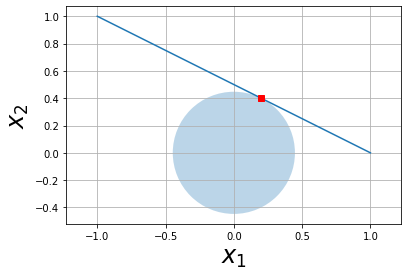
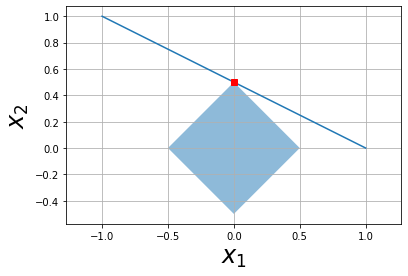
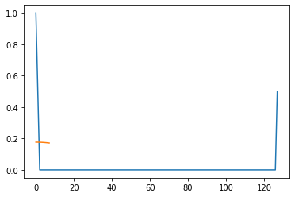
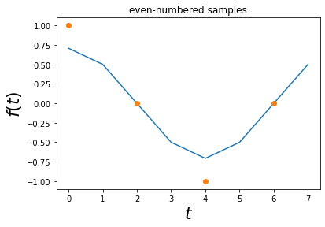
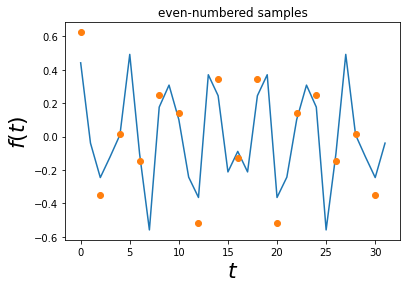

<!DOCTYPE html>


<html lang="en" data-content_root="../" >

  <head>
    <meta charset="utf-8" />
    <meta name="viewport" content="width=device-width, initial-scale=1.0" /><meta name="viewport" content="width=device-width, initial-scale=1" />

    <title>Compressive sampling Overview &#8212; Python for Signal Processing</title>
  
  
  
  <script data-cfasync="false">
    document.documentElement.dataset.mode = localStorage.getItem("mode") || "";
    document.documentElement.dataset.theme = localStorage.getItem("theme") || "";
  </script>
  
  <!-- Loaded before other Sphinx assets -->
  <link href="../_static/styles/theme.css?digest=dfe6caa3a7d634c4db9b" rel="stylesheet" />
<link href="../_static/styles/bootstrap.css?digest=dfe6caa3a7d634c4db9b" rel="stylesheet" />
<link href="../_static/styles/pydata-sphinx-theme.css?digest=dfe6caa3a7d634c4db9b" rel="stylesheet" />

  
  <link href="../_static/vendor/fontawesome/6.5.2/css/all.min.css?digest=dfe6caa3a7d634c4db9b" rel="stylesheet" />
  <link rel="preload" as="font" type="font/woff2" crossorigin href="../_static/vendor/fontawesome/6.5.2/webfonts/fa-solid-900.woff2" />
<link rel="preload" as="font" type="font/woff2" crossorigin href="../_static/vendor/fontawesome/6.5.2/webfonts/fa-brands-400.woff2" />
<link rel="preload" as="font" type="font/woff2" crossorigin href="../_static/vendor/fontawesome/6.5.2/webfonts/fa-regular-400.woff2" />

    <link rel="stylesheet" type="text/css" href="../_static/pygments.css?v=03e43079" />
    <link rel="stylesheet" type="text/css" href="../_static/styles/sphinx-book-theme.css?v=eba8b062" />
    <link rel="stylesheet" type="text/css" href="../_static/togglebutton.css?v=13237357" />
    <link rel="stylesheet" type="text/css" href="../_static/copybutton.css?v=76b2166b" />
    <link rel="stylesheet" type="text/css" href="../_static/mystnb.8ecb98da25f57f5357bf6f572d296f466b2cfe2517ffebfabe82451661e28f02.css?v=6644e6bb" />
    <link rel="stylesheet" type="text/css" href="../_static/sphinx-thebe.css?v=4fa983c6" />
    <link rel="stylesheet" type="text/css" href="../_static/sphinx-design.min.css?v=95c83b7e" />
  
  <!-- Pre-loaded scripts that we'll load fully later -->
  <link rel="preload" as="script" href="../_static/scripts/bootstrap.js?digest=dfe6caa3a7d634c4db9b" />
<link rel="preload" as="script" href="../_static/scripts/pydata-sphinx-theme.js?digest=dfe6caa3a7d634c4db9b" />
  <script src="../_static/vendor/fontawesome/6.5.2/js/all.min.js?digest=dfe6caa3a7d634c4db9b"></script>

    <script src="../_static/documentation_options.js?v=9eb32ce0"></script>
    <script src="../_static/doctools.js?v=9a2dae69"></script>
    <script src="../_static/sphinx_highlight.js?v=dc90522c"></script>
    <script src="../_static/clipboard.min.js?v=a7894cd8"></script>
    <script src="../_static/copybutton.js?v=f281be69"></script>
    <script src="../_static/scripts/sphinx-book-theme.js?v=887ef09a"></script>
    <script>let toggleHintShow = 'Click to show';</script>
    <script>let toggleHintHide = 'Click to hide';</script>
    <script>let toggleOpenOnPrint = 'true';</script>
    <script src="../_static/togglebutton.js?v=4a39c7ea"></script>
    <script>var togglebuttonSelector = '.toggle, .admonition.dropdown';</script>
    <script src="../_static/design-tabs.js?v=f930bc37"></script>
    <script>const THEBE_JS_URL = "https://unpkg.com/thebe@0.8.2/lib/index.js"; const thebe_selector = ".thebe,.cell"; const thebe_selector_input = "pre"; const thebe_selector_output = ".output, .cell_output"</script>
    <script async="async" src="../_static/sphinx-thebe.js?v=c100c467"></script>
    <script>var togglebuttonSelector = '.toggle, .admonition.dropdown';</script>
    <script>const THEBE_JS_URL = "https://unpkg.com/thebe@0.8.2/lib/index.js"; const thebe_selector = ".thebe,.cell"; const thebe_selector_input = "pre"; const thebe_selector_output = ".output, .cell_output"</script>
    <script>window.MathJax = {"options": {"processHtmlClass": "tex2jax_process|mathjax_process|math|output_area"}}</script>
    <script defer="defer" src="https://cdn.jsdelivr.net/npm/mathjax@3/es5/tex-mml-chtml.js"></script>
    <script>DOCUMENTATION_OPTIONS.pagename = 'notebook/Compressive_Sampling';</script>
    <link rel="index" title="Index" href="../genindex.html" />
    <link rel="search" title="Search" href="../search.html" />
    <link rel="next" title="Introduction" href="Conditional_Expectation_Gaussian.html" />
    <link rel="prev" title="Introduction" href="Filtering_Part3.html" />
  <meta name="viewport" content="width=device-width, initial-scale=1"/>
  <meta name="docsearch:language" content="en"/>
  </head>
  
  
  <body data-bs-spy="scroll" data-bs-target=".bd-toc-nav" data-offset="180" data-bs-root-margin="0px 0px -60%" data-default-mode="">

  
  
  <div id="pst-skip-link" class="skip-link d-print-none"><a href="#main-content">Skip to main content</a></div>
  
  <div id="pst-scroll-pixel-helper"></div>
  
  <button type="button" class="btn rounded-pill" id="pst-back-to-top">
    <i class="fa-solid fa-arrow-up"></i>Back to top</button>

  
  <input type="checkbox"
          class="sidebar-toggle"
          id="pst-primary-sidebar-checkbox"/>
  <label class="overlay overlay-primary" for="pst-primary-sidebar-checkbox"></label>
  
  <input type="checkbox"
          class="sidebar-toggle"
          id="pst-secondary-sidebar-checkbox"/>
  <label class="overlay overlay-secondary" for="pst-secondary-sidebar-checkbox"></label>
  
  <div class="search-button__wrapper">
    <div class="search-button__overlay"></div>
    <div class="search-button__search-container">
<form class="bd-search d-flex align-items-center"
      action="../search.html"
      method="get">
  <i class="fa-solid fa-magnifying-glass"></i>
  <input type="search"
         class="form-control"
         name="q"
         id="search-input"
         placeholder="Search this book..."
         aria-label="Search this book..."
         autocomplete="off"
         autocorrect="off"
         autocapitalize="off"
         spellcheck="false"/>
  <span class="search-button__kbd-shortcut"><kbd class="kbd-shortcut__modifier">Ctrl</kbd>+<kbd>K</kbd></span>
</form></div>
  </div>

  <div class="pst-async-banner-revealer d-none">
  <aside id="bd-header-version-warning" class="d-none d-print-none" aria-label="Version warning"></aside>
</div>

  
    <header class="bd-header navbar navbar-expand-lg bd-navbar d-print-none">
    </header>
  

  <div class="bd-container">
    <div class="bd-container__inner bd-page-width">
      
      
      
      <div class="bd-sidebar-primary bd-sidebar">
        

  
  <div class="sidebar-header-items sidebar-primary__section">
    
    
    
    
  </div>
  
    <div class="sidebar-primary-items__start sidebar-primary__section">
        <div class="sidebar-primary-item">

  
    
  

<a class="navbar-brand logo" href="../index.html">
  
  
  
  
  
  
    <p class="title logo__title">Python for Signal Processing</p>
  
</a></div>
        <div class="sidebar-primary-item">

 <script>
 document.write(`
   <button class="btn search-button-field search-button__button" title="Search" aria-label="Search" data-bs-placement="bottom" data-bs-toggle="tooltip">
    <i class="fa-solid fa-magnifying-glass"></i>
    <span class="search-button__default-text">Search</span>
    <span class="search-button__kbd-shortcut"><kbd class="kbd-shortcut__modifier">Ctrl</kbd>+<kbd class="kbd-shortcut__modifier">K</kbd></span>
   </button>
 `);
 </script></div>
        <div class="sidebar-primary-item"><nav class="bd-links bd-docs-nav" aria-label="Main">
    <div class="bd-toc-item navbar-nav active">
        
        <ul class="nav bd-sidenav bd-sidenav__home-link">
            <li class="toctree-l1">
                <a class="reference internal" href="../index.html">
                    Python for Signal Processing
                </a>
            </li>
        </ul>
        <p aria-level="2" class="caption" role="heading"><span class="caption-text">Signal Processing</span></p>
<ul class="current nav bd-sidenav">
<li class="toctree-l1"><a class="reference internal" href="Sampling_Theorem_Part_1.html">Sampling Theorem - Part 1:</a></li>

<li class="toctree-l1"><a class="reference internal" href="Sampling_Theorem_Part_2.html">Approximately Time-Limited Functions</a></li>


<li class="toctree-l1"><a class="reference internal" href="Fourier_Transform.html">Introduction</a></li>


<li class="toctree-l1"><a class="reference internal" href="Frequency_Resolution.html">Introduction</a></li>


<li class="toctree-l1"><a class="reference internal" href="More_Fourier_Transform.html">Introduction</a></li>


<li class="toctree-l1"><a class="reference internal" href="Windowing_Part1.html">Introduction</a></li>


<li class="toctree-l1"><a class="reference internal" href="Windowing_Part2.html">Introduction</a></li>


<li class="toctree-l1"><a class="reference internal" href="Windowing_Part3.html">Introduction</a></li>


<li class="toctree-l1"><a class="reference internal" href="Filtering_Part1.html">Introduction</a></li>


<li class="toctree-l1"><a class="reference internal" href="Filtering_Part2.html">Introduction</a></li>


<li class="toctree-l1"><a class="reference internal" href="Filtering_Part3.html">Introduction</a></li>


<li class="toctree-l1 current active"><a class="current reference internal" href="#">Compressive sampling Overview</a></li>


</ul>
<p aria-level="2" class="caption" role="heading"><span class="caption-text">Stochastic Processes</span></p>
<ul class="nav bd-sidenav">
<li class="toctree-l1"><a class="reference internal" href="Conditional_Expectation_Gaussian.html">Introduction</a></li>

<li class="toctree-l1"><a class="reference internal" href="Conditional_expectation_MSE.html">Summary</a></li>
<li class="toctree-l1"><a class="reference internal" href="Conditional_expectation_MSE_Ex.html">Introduction</a></li>


<li class="toctree-l1"><a class="reference internal" href="Conditional_Expectation_Projection.html">Introduction</a></li>


<li class="toctree-l1"><a class="reference internal" href="Projection.html">Weighted distances</a></li>

<li class="toctree-l1"><a class="reference internal" href="Projection_Ex.html">References</a></li>
<li class="toctree-l1"><a class="reference internal" href="Projection_mdim.html">Projection in Multiple Dimensions</a></li>

<li class="toctree-l1"><a class="reference internal" href="Inverse_Projection_Constrained_Optimization.html">Inverse Projection</a></li>


<li class="toctree-l1"><a class="reference internal" href="Gauss_Markov.html">Introduction</a></li>


<li class="toctree-l1"><a class="reference internal" href="Maximum_likelihood.html">Maximum Likelihood Estimation</a></li>

<li class="toctree-l1"><a class="reference internal" href="Expectation_Maximization.html">Expectation Maximization</a></li>


<li class="toctree-l1"><a class="reference internal" href="Markov_chains.html">Basic Definitions</a></li>


<li class="toctree-l1"><a class="reference internal" href="Buffons_Needle_Sim.html">Buffon’s Needle</a></li>


<li class="toctree-l1"><a class="reference internal" href="Sampling_Monte_Carlo.html">Introduction</a></li>


<li class="toctree-l1"><a class="reference internal" href="Rectangle_Wedge_Tail_Decomposition.html">Rectangle Wedge Tail Decomposition</a></li>
</ul>
<p aria-level="2" class="caption" role="heading"><span class="caption-text">Misc</span></p>
<ul class="nav bd-sidenav">
<li class="toctree-l1"><a class="reference internal" href="Example_CSVs.html">Examples using CSV files</a></li>


</ul>
<p aria-level="2" class="caption" role="heading"><span class="caption-text">Book Version</span></p>
<ul class="nav bd-sidenav">
<li class="toctree-l1"><a class="reference internal" href="../book-version/Chapter_1_Intro.html">Tutorial Numpy</a></li>


</ul>

    </div>
</nav></div>
    </div>
  
  
  <div class="sidebar-primary-items__end sidebar-primary__section">
  </div>
  
  <div id="rtd-footer-container"></div>


      </div>
      
      <main id="main-content" class="bd-main" role="main">
        
        

<div class="sbt-scroll-pixel-helper"></div>

          <div class="bd-content">
            <div class="bd-article-container">
              
              <div class="bd-header-article d-print-none">
<div class="header-article-items header-article__inner">
  
    <div class="header-article-items__start">
      
        <div class="header-article-item"><button class="sidebar-toggle primary-toggle btn btn-sm" title="Toggle primary sidebar" data-bs-placement="bottom" data-bs-toggle="tooltip">
  <span class="fa-solid fa-bars"></span>
</button></div>
      
    </div>
  
  
    <div class="header-article-items__end">
      
        <div class="header-article-item">

<div class="article-header-buttons">


<div class="dropdown dropdown-source-buttons">
  <button class="btn dropdown-toggle" type="button" data-bs-toggle="dropdown" aria-expanded="false" aria-label="Source repositories">
    <i class="fab fa-github"></i>
  </button>
  <ul class="dropdown-menu">
      
      
      
      <li><a href="https://github.com/unpingco/Python-for-Signal-Processing" target="_blank"
   class="btn btn-sm btn-source-repository-button dropdown-item"
   title="Source repository"
   data-bs-placement="left" data-bs-toggle="tooltip"
>
  

<span class="btn__icon-container">
  <i class="fab fa-github"></i>
  </span>
<span class="btn__text-container">Repository</span>
</a>
</li>
      
      
      
      
      <li><a href="https://github.com/unpingco/Python-for-Signal-Processing/issues/new?title=Issue%20on%20page%20%2Fnotebook/Compressive_Sampling.html&body=Your%20issue%20content%20here." target="_blank"
   class="btn btn-sm btn-source-issues-button dropdown-item"
   title="Open an issue"
   data-bs-placement="left" data-bs-toggle="tooltip"
>
  

<span class="btn__icon-container">
  <i class="fas fa-lightbulb"></i>
  </span>
<span class="btn__text-container">Open issue</span>
</a>
</li>
      
  </ul>
</div>


<div class="dropdown dropdown-download-buttons">
  <button class="btn dropdown-toggle" type="button" data-bs-toggle="dropdown" aria-expanded="false" aria-label="Download this page">
    <i class="fas fa-download"></i>
  </button>
  <ul class="dropdown-menu">
      
      
      
      <li><a href="../_sources/notebook/Compressive_Sampling.ipynb" target="_blank"
   class="btn btn-sm btn-download-source-button dropdown-item"
   title="Download source file"
   data-bs-placement="left" data-bs-toggle="tooltip"
>
  

<span class="btn__icon-container">
  <i class="fas fa-file"></i>
  </span>
<span class="btn__text-container">.ipynb</span>
</a>
</li>
      
      
      
      
      <li>
<button onclick="window.print()"
  class="btn btn-sm btn-download-pdf-button dropdown-item"
  title="Print to PDF"
  data-bs-placement="left" data-bs-toggle="tooltip"
>
  

<span class="btn__icon-container">
  <i class="fas fa-file-pdf"></i>
  </span>
<span class="btn__text-container">.pdf</span>
</button>
</li>
      
  </ul>
</div>


<button onclick="toggleFullScreen()"
  class="btn btn-sm btn-fullscreen-button"
  title="Fullscreen mode"
  data-bs-placement="bottom" data-bs-toggle="tooltip"
>
  

<span class="btn__icon-container">
  <i class="fas fa-expand"></i>
  </span>

</button>


<script>
document.write(`
  <button class="btn btn-sm nav-link pst-navbar-icon theme-switch-button" title="light/dark" aria-label="light/dark" data-bs-placement="bottom" data-bs-toggle="tooltip">
    <i class="theme-switch fa-solid fa-sun fa-lg" data-mode="light"></i>
    <i class="theme-switch fa-solid fa-moon fa-lg" data-mode="dark"></i>
    <i class="theme-switch fa-solid fa-circle-half-stroke fa-lg" data-mode="auto"></i>
  </button>
`);
</script>


<script>
document.write(`
  <button class="btn btn-sm pst-navbar-icon search-button search-button__button" title="Search" aria-label="Search" data-bs-placement="bottom" data-bs-toggle="tooltip">
    <i class="fa-solid fa-magnifying-glass fa-lg"></i>
  </button>
`);
</script>
<button class="sidebar-toggle secondary-toggle btn btn-sm" title="Toggle secondary sidebar" data-bs-placement="bottom" data-bs-toggle="tooltip">
    <span class="fa-solid fa-list"></span>
</button>
</div></div>
      
    </div>
  
</div>
</div>
              
              

<div id="jb-print-docs-body" class="onlyprint">
    <h1>Compressive sampling Overview</h1>
    <!-- Table of contents -->
    <div id="print-main-content">
        <div id="jb-print-toc">
            
            <div>
                <h2> Contents </h2>
            </div>
            <nav aria-label="Page">
                <ul class="visible nav section-nav flex-column">
<li class="toc-h1 nav-item toc-entry"><a class="reference internal nav-link" href="#">Compressive sampling Overview</a></li>
<li class="toc-h1 nav-item toc-entry"><a class="reference internal nav-link" href="#what-are-sparse-signals">What Are Sparse Signals?</a></li>
<li class="toc-h1 nav-item toc-entry"><a class="reference internal nav-link" href="#reconstructing-sparse-signals">Reconstructing Sparse Signals</a></li>
<li class="toc-h1 nav-item toc-entry"><a class="reference internal nav-link" href="#l-2-vs-l-1-optimization"><span class="math notranslate nohighlight">\(L_2\)</span> vs. <span class="math notranslate nohighlight">\(L_1\)</span> Optimization</a></li>
<li class="toc-h1 nav-item toc-entry"><a class="reference internal nav-link" href="#example-gaussian-random-matrices">Example Gaussian Random matrices</a></li>
<li class="toc-h1 nav-item toc-entry"><a class="reference internal nav-link" href="#example-sparse-fourier-transform">Example: Sparse Fourier Transform</a></li>
<li class="toc-h1 nav-item toc-entry"><a class="reference internal nav-link" href="#uniform-uncertainty-principle">Uniform Uncertainty Principle</a><ul class="visible nav section-nav flex-column">
<li class="toc-h2 nav-item toc-entry"><a class="reference internal nav-link" href="#example-sampling-sinusoids">Example: Sampling Sinusoids</a></li>
</ul>
</li>
</ul>

            </nav>
        </div>
    </div>
</div>

              
                
<div id="searchbox"></div>
                <article class="bd-article">
                  
  <section id="compressive-sampling-overview">
<h1>Compressive sampling Overview<a class="headerlink" href="#compressive-sampling-overview" title="Link to this heading">#</a></h1>
<p>In our previous discussion, we saw that imposing bandlimited-ness on our class of signals permits point-wise sampling of our signal and then later perfect reconstruction. It turns out that by imposing <em>sparsity</em> we can also obtain perfect reconstruction irrespective of whether or not we have satsified the sampling rate limits imposed by Shannon’s sampling theorem. This has extremely important in practice because many signals are naturally sparse so that collecting samples at high rates only to dump most of them as the signal is compressed is expensive and wasteful.</p>
</section>
<section id="what-are-sparse-signals">
<h1>What Are Sparse Signals?<a class="headerlink" href="#what-are-sparse-signals" title="Link to this heading">#</a></h1>
<p>Let’s carefully discuss what we mean by <em>sparse</em> in this context. A signal <span class="math notranslate nohighlight">\(f\)</span> is sparse if it can be expressed in very few nonzero components (<span class="math notranslate nohighlight">\(\mathbf{s}\)</span>) with respect to a given basis (<span class="math notranslate nohighlight">\( \mathbf{\Psi} \)</span> ). In other words, in matrix-vector language:</p>
<p><span class="math notranslate nohighlight">\( \mathbf{f} = \mathbf{\Psi} \mathbf{s} \)</span></p>
<p>where  <span class="math notranslate nohighlight">\( || \mathbf{s} ||_0 \leq N \)</span> where <span class="math notranslate nohighlight">\(N\)</span> is the length of the vector and  <span class="math notranslate nohighlight">\(|| \cdot||_0\)</span> counts the number of nonzero elements in <span class="math notranslate nohighlight">\(\mathbf{s}\)</span>. Furthermore, we don’t actually collect <span class="math notranslate nohighlight">\(N\)</span> samples point-wise as we did in the Shannon sampling case. Rather, we measure <span class="math notranslate nohighlight">\(\mathbf{f}\)</span> indirectly as <span class="math notranslate nohighlight">\(\mathbf{y}\)</span> with another matrix as in:</p>
<p><span class="math notranslate nohighlight">\(\mathbf{y}  = \mathbf{\Phi f} = \mathbf{\Phi} \mathbf{\Psi} \mathbf{s} = \mathbf{\Theta s}   \)</span></p>
<p>where  <span class="math notranslate nohighlight">\(\mathbf{\Theta}\)</span>  is an <span class="math notranslate nohighlight">\(M \times N\)</span> matrix and <span class="math notranslate nohighlight">\( M &lt; N \)</span> is the number of measurements. This setup means we have two problems to solve. First, how to design a <em>stable</em> measurement matrix <span class="math notranslate nohighlight">\(\mathbf{\Phi}\)</span> and then, second, how to reconstruct <span class="math notranslate nohighlight">\( \mathbf{f} \)</span> from <span class="math notranslate nohighlight">\( \mathbf{y} \)</span>.</p>
<p>This may look like a standard linear algebra problem but since <span class="math notranslate nohighlight">\( \mathbf{\Theta} \)</span> has fewer rows than columns, the solution is necessarily ill-posed. This is where we inject the sparsity concept! Suppose that <span class="math notranslate nohighlight">\(f\)</span> is <span class="math notranslate nohighlight">\(K\)</span>-sparse ( <span class="math notranslate nohighlight">\(||f||_0=K\)</span> ), then if we somehow knew <em>which</em> <span class="math notranslate nohighlight">\(K\)</span> columns of <span class="math notranslate nohighlight">\( \mathbf{\Theta} \)</span> matched the <span class="math notranslate nohighlight">\(K\)</span> non-zero entries in <span class="math notranslate nohighlight">\(\mathbf{s}\)</span>, then <span class="math notranslate nohighlight">\(\mathbf{\Theta}\)</span> would be <span class="math notranslate nohighlight">\( M \times K \)</span> where we could make <span class="math notranslate nohighlight">\(M &gt; K\)</span> and then have a stable inverse.</p>
<p>This bit of reasoning is encapsulated in the following statement for any vector <span class="math notranslate nohighlight">\(\mathbf{v}\)</span> sharing the same <span class="math notranslate nohighlight">\(K\)</span> non-zero entries as <span class="math notranslate nohighlight">\(\mathbf{s}\)</span>, we have</p>
<div class="math notranslate nohighlight">
\[1-\epsilon \leq \frac{||  \mathbf{\Theta v} ||_2}{|| \mathbf{v}  ||_2} \leq 1+\epsilon \]</div>
<p>which is another way of saying that <span class="math notranslate nohighlight">\(\mathbf{\Theta}\)</span> preserves the lengths of <span class="math notranslate nohighlight">\(K\)</span>-sparse vectors. Of course we don’t know ahead of time which <span class="math notranslate nohighlight">\(K\)</span> components to use, but it turns out that this condition is sufficient for a stable inverse of <span class="math notranslate nohighlight">\(\mathbf{\Theta}\)</span> if it holds for any  <span class="math notranslate nohighlight">\(3K\)</span>-sparse vector <span class="math notranslate nohighlight">\(\mathbf{v}\)</span>. This is the <em>Restricted Isometry Property</em> (RIP). Unfortunately, in order to use this sufficient condition, we would have to propose a <span class="math notranslate nohighlight">\(\mathbf{\Theta}\)</span> and then check all possible combinations of nonzero entries in the <span class="math notranslate nohighlight">\(N\)</span>-length vector <span class="math notranslate nohighlight">\(\mathbf{v}\)</span>. As you may guess, this is prohibitive.</p>
<p>Alternatively, we can approach stability by defining <em>incoherence</em> between the measurement matrix <span class="math notranslate nohighlight">\(\mathbf{\Phi}\)</span> and the sparse basis <span class="math notranslate nohighlight">\(\mathbf{\Psi}\)</span> as when any of the columns of one cannot be expressed as a small subset of the columns of the other. For example, if we have delta-spikes for <span class="math notranslate nohighlight">\(\mathbf{\Phi}\)</span> as the row-truncated identity matrix</p>
<div class="math notranslate nohighlight">
\[\mathbf{\Phi} = \mathbf{I}_{M \times N} \]</div>
<p>and the discrete Fourier transform matrix for <span class="math notranslate nohighlight">\(\mathbf{\Psi}\)</span> as</p>
<p><span class="math notranslate nohighlight">\(\mathbf{\Psi} = \begin{bmatrix}\\\\
e^{-j 2\pi k n/N}\\\\
\end{bmatrix}_{N \times N}\)</span></p>
<p>Then we could not write any of the columns of <span class="math notranslate nohighlight">\(\mathbf{\Phi}\)</span> using just a few of the columns of <span class="math notranslate nohighlight">\(\mathbf{\Psi}\)</span>.</p>
<p>It turns out that picking the measuring <span class="math notranslate nohighlight">\(M \times N\)</span> matrix randomly according to a Gaussian zero-mean, <span class="math notranslate nohighlight">\(1/N\)</span> variance distribution and using the identity matrix as <span class="math notranslate nohighlight">\(\mathbf{\Phi}\)</span>, that the resulting <span class="math notranslate nohighlight">\(\mathbf{\Theta}\)</span> matrix can be shown to satisfy RIP with a high probability. This means that we can recover <span class="math notranslate nohighlight">\(N\)</span>-length <span class="math notranslate nohighlight">\(K\)</span>-sparse signals with a high probability from just <span class="math notranslate nohighlight">\(M \ge c K \log (N/K)\)</span> samples where <span class="math notranslate nohighlight">\(c\)</span> is a small constant. Furthermore, it also turns out that we can use any orthonormal basis for <span class="math notranslate nohighlight">\(\mathbf{\Phi}\)</span>, not just the identity matrix, and these relations will all still hold.</p>
</section>
<section id="reconstructing-sparse-signals">
<h1>Reconstructing Sparse Signals<a class="headerlink" href="#reconstructing-sparse-signals" title="Link to this heading">#</a></h1>
<p>Now that we have a way, by using random matrices, to satisfy the RIP, we are ready to consider the reconstruction problem. The first impulse is to compute the least-squares solution to this problem as</p>
<div class="math notranslate nohighlight">
\[ \mathbf{s}^* = \mathbf{\Theta}^T (\mathbf{\Theta}\mathbf{\Theta}^T)^{-1}\mathbf{y} \]</div>
<p>But a moment’s thought may convince you that since <span class="math notranslate nohighlight">\(\mathbf{\Theta}\)</span> is a random matrix, most likely with lots of non-zero entries, it is highly unlikely that <span class="math notranslate nohighlight">\(\mathbf{s}^* \)</span> will turn out to be sparse. There is actually a deeper geometric intuition as to why this happens, but let’s first consider another way of solving this so that the <span class="math notranslate nohighlight">\(\mathbf{s}^*\)</span> is <span class="math notranslate nohighlight">\(K\)</span>-sparse.  Suppose instead we shuffle through combinations of <span class="math notranslate nohighlight">\(K\)</span> nonzero entries in <span class="math notranslate nohighlight">\(\mathbf{s}\)</span> until we satisfy the measurements <span class="math notranslate nohighlight">\(\mathbf{y}\)</span>. Stated mathematically, this means</p>
<div class="math notranslate nohighlight">
\[ \mathbf{s}^* = argmin || \mathbf{s}^* ||_0  \]</div>
<p>where</p>
<div class="math notranslate nohighlight">
\[ \mathbf{\Theta} \mathbf{s}^* = \mathbf{y} \]</div>
<p>It can be shown that with <span class="math notranslate nohighlight">\(M=K+1\)</span> iid Gaussian measurements, this optimization will recover a <span class="math notranslate nohighlight">\(K\)</span>-sparse signal exactly with high probability. Unfortunately, this is numerically unstable in addition to being an NP-complete problem.</p>
<p>Thus, we need another tractable way to approach this problem. It turns out that when a signal is sparse, it usually means that the nonzero terms are highly asymmetric meaning that if there are <span class="math notranslate nohighlight">\(K\)</span> terms, then most likely there is one term that is dominant (i.e. of much larger magnitude) and that dwarfs the other nonzero terms. Geometrically, this means that in <span class="math notranslate nohighlight">\(N\)</span>-dimensional space, the sparse signal is very close to one (or, maybe just a few)  of the axes.</p>
<p>It turns out that one can bypass this combinatorial problem using <span class="math notranslate nohighlight">\(L_1\)</span> minimization. To examine this, let’s digress and look at the main difference between <span class="math notranslate nohighlight">\(L_2\)</span> and <span class="math notranslate nohighlight">\(L_1\)</span> minimization problems.</p>
<p>reference:
<code class="docutils literal notranslate"><span class="pre">http://users.ece.gatech.edu/justin/ssp2007</span></code></p>
</section>
<section id="l-2-vs-l-1-optimization">
<h1><span class="math notranslate nohighlight">\(L_2\)</span> vs. <span class="math notranslate nohighlight">\(L_1\)</span> Optimization<a class="headerlink" href="#l-2-vs-l-1-optimization" title="Link to this heading">#</a></h1>
<p>The classic constrained least squares problem is the following:</p>
<p>min <span class="math notranslate nohighlight">\(||\mathbf{x}||_2^2\)</span></p>
<p>where <span class="math notranslate nohighlight">\(x_1 + 2 x_2 = 1\)</span></p>
<p>with corresponding solution illustrated below.</p>
<div class="cell docutils container">
<div class="cell_input docutils container">
<div class="highlight-ipython3 notranslate"><div class="highlight"><pre><span></span><span class="kn">import</span><span class="w"> </span><span class="nn">numpy</span><span class="w"> </span><span class="k">as</span><span class="w"> </span><span class="nn">np</span>
<span class="kn">import</span><span class="w"> </span><span class="nn">matplotlib.pyplot</span><span class="w"> </span><span class="k">as</span><span class="w"> </span><span class="nn">plt</span>
<span class="kn">from</span><span class="w"> </span><span class="nn">matplotlib.patches</span><span class="w"> </span><span class="kn">import</span> <span class="n">Circle</span>
<span class="n">x1</span> <span class="o">=</span> <span class="n">np</span><span class="o">.</span><span class="n">linspace</span><span class="p">(</span><span class="o">-</span><span class="mi">1</span><span class="p">,</span><span class="mi">1</span><span class="p">,</span><span class="mi">10</span><span class="p">)</span>
<span class="n">fig</span> <span class="o">=</span> <span class="n">plt</span><span class="o">.</span><span class="n">figure</span><span class="p">()</span>
<span class="n">ax</span> <span class="o">=</span> <span class="n">fig</span><span class="o">.</span><span class="n">add_subplot</span><span class="p">(</span><span class="mi">111</span><span class="p">)</span>
<span class="n">ax</span><span class="o">.</span><span class="n">plot</span><span class="p">(</span><span class="n">x1</span><span class="p">,(</span><span class="mi">1</span><span class="o">-</span><span class="n">x1</span><span class="p">)</span><span class="o">/</span><span class="mi">2</span><span class="p">)</span>
<span class="n">ax</span><span class="o">.</span><span class="n">add_patch</span><span class="p">(</span><span class="n">Circle</span><span class="p">((</span><span class="mi">0</span><span class="p">,</span><span class="mi">0</span><span class="p">),</span><span class="mi">1</span><span class="o">/</span><span class="n">np</span><span class="o">.</span><span class="n">sqrt</span><span class="p">(</span><span class="mi">5</span><span class="p">),</span><span class="n">alpha</span><span class="o">=</span><span class="mf">0.3</span><span class="p">))</span>
<span class="n">ax</span><span class="o">.</span><span class="n">plot</span><span class="p">(</span><span class="mi">1</span><span class="o">/</span><span class="mi">5</span><span class="p">,</span><span class="mi">2</span><span class="o">/</span><span class="mi">5</span><span class="p">,</span><span class="s1">&#39;rs&#39;</span><span class="p">)</span>
<span class="n">ax</span><span class="o">.</span><span class="n">axis</span><span class="p">(</span><span class="s1">&#39;equal&#39;</span><span class="p">)</span>
<span class="n">ax</span><span class="o">.</span><span class="n">set_xlabel</span><span class="p">(</span><span class="s1">&#39;$x_1$&#39;</span><span class="p">,</span><span class="n">fontsize</span><span class="o">=</span><span class="mi">24</span><span class="p">)</span>
<span class="n">ax</span><span class="o">.</span><span class="n">set_ylabel</span><span class="p">(</span><span class="s1">&#39;$x_2$&#39;</span><span class="p">,</span><span class="n">fontsize</span><span class="o">=</span><span class="mi">24</span><span class="p">)</span>
<span class="n">ax</span><span class="o">.</span><span class="n">grid</span><span class="p">()</span>
</pre></div>
</div>
</div>
<div class="cell_output docutils container">

</div>
</div>
<p>Note that the line is the constraint so that any solution to this problem must be on this line (i.e. satisfy the constraint). The <span class="math notranslate nohighlight">\(L_2\)</span> solution is the one that just touches the perimeter of the circle. This is because, in <span class="math notranslate nohighlight">\(L_2\)</span>, the unit-ball has the shape of a circle and represents all solutions of a fixed <span class="math notranslate nohighlight">\(L_2\)</span> length. Thus, the one of smallest length that intersects the line is the one that satisfies the stated minimization problem. Intuitively, this means that we <em>inflate</em> a ball at the origin and stop when it touches the contraint. The point of contact is our <span class="math notranslate nohighlight">\(L_2\)</span> minimization solution.</p>
<p>Now, let’s do same problem in <span class="math notranslate nohighlight">\(L_1\)</span> norm</p>
<p>min <span class="math notranslate nohighlight">\(||\mathbf{x}||_1=|x_1|+|x_2|\)</span></p>
<p>where <span class="math notranslate nohighlight">\(x_1 + 2 x_2 = 1\)</span></p>
<p>In this case the constant-norm unit-ball contour in the <span class="math notranslate nohighlight">\(L_1\)</span> norm is a diamond-shape instead of a circle. Comparing the  graph below to the last shows that the solutions found are different. Geometrically, this is because the line tilts over in such a way that the inflating circular <span class="math notranslate nohighlight">\(L_2\)</span> ball hits a point of tangency that is different from the <span class="math notranslate nohighlight">\(L_1\)</span> ball because the <span class="math notranslate nohighlight">\(L_1\)</span> ball creeps out mainly along the principal axes and is less influenced by the tilt of the line. This effect is much more pronounced in higher <span class="math notranslate nohighlight">\(N\)</span>-dimensional spaces where <span class="math notranslate nohighlight">\(L_1\)</span>-balls get more <em>spikey</em>.</p>
<p>The fact that the <span class="math notranslate nohighlight">\(L_1\)</span> problem is less sensitive to the tilt of the line is crucial since that tilt (i.e. orientation) is random due the choice of random measurement matrices. So, for this problem to be well-posed, we need to <em>not</em> be influenced by the orientation of any particular choice of random matrix and this is what casting this as a <span class="math notranslate nohighlight">\(L_1\)</span> minimization provides.</p>
<div class="cell docutils container">
<div class="cell_input docutils container">
<div class="highlight-ipython3 notranslate"><div class="highlight"><pre><span></span><span class="kn">from</span><span class="w"> </span><span class="nn">matplotlib.patches</span><span class="w"> </span><span class="kn">import</span> <span class="n">Rectangle</span>
<span class="kn">import</span><span class="w"> </span><span class="nn">matplotlib.patches</span>
<span class="kn">import</span><span class="w"> </span><span class="nn">matplotlib.transforms</span>

<span class="n">r</span> <span class="o">=</span> <span class="n">matplotlib</span><span class="o">.</span><span class="n">patches</span><span class="o">.</span><span class="n">RegularPolygon</span><span class="p">((</span><span class="mi">0</span><span class="p">,</span><span class="mi">0</span><span class="p">),</span><span class="mi">4</span><span class="p">,</span><span class="mi">1</span><span class="o">/</span><span class="mi">2</span><span class="p">,</span> <span class="n">np</span><span class="o">.</span><span class="n">pi</span><span class="o">/</span><span class="mi">2</span><span class="p">,</span><span class="n">alpha</span><span class="o">=</span><span class="mf">0.5</span><span class="p">)</span>

<span class="n">fig</span> <span class="o">=</span> <span class="n">plt</span><span class="o">.</span> <span class="n">figure</span><span class="p">()</span>
<span class="n">ax</span> <span class="o">=</span> <span class="n">fig</span><span class="o">.</span><span class="n">add_subplot</span><span class="p">(</span><span class="mi">111</span><span class="p">)</span>
<span class="n">ax</span><span class="o">.</span><span class="n">plot</span><span class="p">(</span><span class="n">x1</span><span class="p">,(</span><span class="mi">1</span><span class="o">-</span><span class="n">x1</span><span class="p">)</span><span class="o">/</span><span class="mi">2</span><span class="p">)</span>
<span class="n">ax</span><span class="o">.</span><span class="n">plot</span><span class="p">(</span><span class="mi">0</span><span class="p">,</span><span class="mi">1</span><span class="o">/</span><span class="mi">2</span><span class="p">,</span><span class="s1">&#39;rs&#39;</span><span class="p">)</span>
<span class="n">ax</span><span class="o">.</span><span class="n">add_patch</span><span class="p">(</span><span class="n">r</span><span class="p">)</span>
<span class="n">ax</span><span class="o">.</span><span class="n">grid</span><span class="p">()</span>
<span class="n">ax</span><span class="o">.</span><span class="n">set_xlabel</span><span class="p">(</span><span class="s1">&#39;$x_1$&#39;</span><span class="p">,</span><span class="n">fontsize</span><span class="o">=</span><span class="mi">24</span><span class="p">)</span>
<span class="n">ax</span><span class="o">.</span><span class="n">set_ylabel</span><span class="p">(</span><span class="s1">&#39;$x_2$&#39;</span><span class="p">,</span><span class="n">fontsize</span><span class="o">=</span><span class="mi">24</span><span class="p">)</span>
<span class="n">ax</span><span class="o">.</span><span class="n">axis</span><span class="p">(</span><span class="s1">&#39;equal&#39;</span><span class="p">)</span>
</pre></div>
</div>
</div>
<div class="cell_output docutils container">
<div class="output text_plain highlight-myst-ansi notranslate"><div class="highlight"><pre><span></span>(-1.1, 1.1, -0.575, 1.075)
</pre></div>
</div>

</div>
</div>
<p>To explore this a bit, let’s consider using the <code class="docutils literal notranslate"><span class="pre">cvxopt</span></code> package (Python ver 2.6 used here). This can be cast as a linear programming problem as follows:</p>
<p>min <span class="math notranslate nohighlight">\(||\mathbf{t}||_1 = |t_1| + |t_2|\)</span></p>
<p>subject to:</p>
<p><span class="math notranslate nohighlight">\(-t_1 &lt; x_1 &lt; t_1\)</span></p>
<p><span class="math notranslate nohighlight">\(-t_2 &lt; x_2 &lt; t_2\)</span></p>
<p><span class="math notranslate nohighlight">\(x_1 + 2 x_2 = 1\)</span></p>
<p><span class="math notranslate nohighlight">\(t_1 &gt; 0\)</span></p>
<p><span class="math notranslate nohighlight">\(t_2 &gt; 0\)</span></p>
<p>where the last two constraints are already implied by the first two and are written out just for clarity. This can be implemented and solved in <code class="docutils literal notranslate"><span class="pre">cvxopt</span></code> as the following:</p>
<div class="cell docutils container">
<div class="cell_input docutils container">
<div class="highlight-ipython3 notranslate"><div class="highlight"><pre><span></span><span class="kn">from</span><span class="w"> </span><span class="nn">cvxopt</span><span class="w"> </span><span class="kn">import</span> <span class="n">matrix</span> <span class="k">as</span> <span class="n">matrx</span> <span class="c1"># don&#39;t overrite numpy matrix class</span>
<span class="kn">from</span><span class="w"> </span><span class="nn">cvxopt</span><span class="w"> </span><span class="kn">import</span> <span class="n">solvers</span>

<span class="c1">#t1,x1,t2,x2</span>
<span class="n">c</span> <span class="o">=</span> <span class="n">matrx</span><span class="p">([</span><span class="mi">1</span><span class="p">,</span><span class="mi">0</span><span class="p">,</span><span class="mi">1</span><span class="p">,</span><span class="mi">0</span><span class="p">],(</span><span class="mi">4</span><span class="p">,</span><span class="mi">1</span><span class="p">),</span><span class="s1">&#39;d&#39;</span><span class="p">)</span> 
<span class="n">G</span> <span class="o">=</span> <span class="n">matrx</span><span class="p">([</span>   <span class="p">[</span><span class="o">-</span><span class="mi">1</span><span class="p">,</span>  <span class="o">-</span><span class="mi">1</span><span class="p">,</span> <span class="mi">0</span><span class="p">,</span>  <span class="mi">0</span><span class="p">],</span>  <span class="c1">#column-0</span>
              <span class="p">[</span> <span class="mi">1</span><span class="p">,</span>  <span class="o">-</span><span class="mi">1</span><span class="p">,</span> <span class="mi">0</span><span class="p">,</span>  <span class="mi">0</span><span class="p">],</span>  <span class="c1">#column-1</span>
              <span class="p">[</span> <span class="mi">0</span><span class="p">,</span>   <span class="mi">0</span><span class="p">,</span> <span class="o">-</span><span class="mi">1</span><span class="p">,</span><span class="o">-</span><span class="mi">1</span><span class="p">],</span>  <span class="c1">#column-2</span>
              <span class="p">[</span> <span class="mi">0</span><span class="p">,</span>   <span class="mi">0</span><span class="p">,</span>  <span class="mi">1</span><span class="p">,</span><span class="o">-</span><span class="mi">1</span><span class="p">],</span>  <span class="c1">#column-3</span>
           <span class="p">],(</span><span class="mi">4</span><span class="p">,</span><span class="mi">4</span><span class="p">),</span><span class="s1">&#39;d&#39;</span><span class="p">)</span>

<span class="n">h</span> <span class="o">=</span> <span class="n">matrx</span><span class="p">([</span><span class="mi">0</span><span class="p">,</span><span class="mi">0</span><span class="p">,</span><span class="mi">0</span><span class="p">,</span><span class="mi">0</span><span class="p">],(</span><span class="mi">4</span><span class="p">,</span><span class="mi">1</span><span class="p">),</span><span class="s1">&#39;d&#39;</span><span class="p">)</span> <span class="c1"># (4,1) is 4-rows,1-column, &#39;d&#39; is float type spec</span>
<span class="n">A</span> <span class="o">=</span> <span class="n">matrx</span><span class="p">([</span><span class="mi">0</span><span class="p">,</span><span class="mi">1</span><span class="p">,</span><span class="mi">0</span><span class="p">,</span><span class="mi">2</span><span class="p">],(</span><span class="mi">1</span><span class="p">,</span><span class="mi">4</span><span class="p">),</span><span class="s1">&#39;d&#39;</span><span class="p">)</span>
<span class="n">b</span> <span class="o">=</span> <span class="n">matrx</span><span class="p">([</span><span class="mi">1</span><span class="p">],(</span><span class="mi">1</span><span class="p">,</span><span class="mi">1</span><span class="p">),</span><span class="s1">&#39;d&#39;</span><span class="p">)</span>
<span class="n">sol</span> <span class="o">=</span> <span class="n">solvers</span><span class="o">.</span><span class="n">lp</span><span class="p">(</span><span class="n">c</span><span class="p">,</span> <span class="n">G</span><span class="p">,</span> <span class="n">h</span><span class="p">,</span><span class="n">A</span><span class="p">,</span><span class="n">b</span><span class="p">)</span>
<span class="n">x1</span><span class="o">=</span><span class="n">sol</span><span class="p">[</span><span class="s1">&#39;x&#39;</span><span class="p">][</span><span class="mi">1</span><span class="p">]</span>
<span class="n">x2</span><span class="o">=</span><span class="n">sol</span><span class="p">[</span><span class="s1">&#39;x&#39;</span><span class="p">][</span><span class="mi">3</span><span class="p">]</span>
<span class="nb">print</span><span class="p">(</span><span class="s1">&#39;x=</span><span class="si">%3.2f</span><span class="s1">&#39;</span><span class="o">%</span> <span class="n">x1</span><span class="p">)</span>
<span class="nb">print</span><span class="p">(</span><span class="s1">&#39;y=</span><span class="si">%3.2f</span><span class="s1">&#39;</span><span class="o">%</span> <span class="n">x2</span><span class="p">)</span>
</pre></div>
</div>
</div>
<div class="cell_output docutils container">
<div class="output stream highlight-myst-ansi notranslate"><div class="highlight"><pre><span></span>     pcost       dcost       gap    pres   dres   k/t
 0:  0.0000e+00 -0.0000e+00  3e+00  3e+00  1e-16  1e+00
 1:  2.3609e-01  2.3386e-01  5e-01  5e-01  2e-16  2e-01
 2:  4.9833e-01  4.9734e-01  5e-02  4e-02  2e-15  1e-02
 3:  4.9998e-01  4.9997e-01  5e-04  5e-04  5e-16  2e-04
 4:  5.0000e-01  5.0000e-01  5e-06  5e-06  7e-16  2e-06
 5:  5.0000e-01  5.0000e-01  5e-08  5e-08  9e-16  2e-08
Optimal solution found.
x=0.00
y=0.50
</pre></div>
</div>
</div>
</div>
</section>
<section id="example-gaussian-random-matrices">
<h1>Example Gaussian Random matrices<a class="headerlink" href="#example-gaussian-random-matrices" title="Link to this heading">#</a></h1>
<p>Let’s try out our earlier result about random Gaussian matrices and see if we can reconstruct an unknown <span class="math notranslate nohighlight">\(\mathbf{s}\)</span> vector using <span class="math notranslate nohighlight">\(L_1\)</span> minimization.</p>
<div class="cell docutils container">
<div class="cell_input docutils container">
<div class="highlight-ipython3 notranslate"><div class="highlight"><pre><span></span><span class="kn">import</span><span class="w"> </span><span class="nn">scipy.linalg</span>

<span class="k">def</span><span class="w"> </span><span class="nf">rearrange_G</span><span class="p">(</span> <span class="n">x</span> <span class="p">):</span> 
    <span class="s1">&#39;setup to put inequalities matrix with last 1/2 of elements as main variables&#39;</span>
    <span class="n">n</span> <span class="o">=</span> <span class="n">x</span><span class="o">.</span><span class="n">shape</span><span class="p">[</span><span class="mi">0</span><span class="p">]</span>
    <span class="k">return</span> <span class="n">np</span><span class="o">.</span><span class="n">hstack</span><span class="p">([</span><span class="n">x</span><span class="p">[:,</span><span class="n">np</span><span class="o">.</span><span class="n">arange</span><span class="p">(</span><span class="mi">0</span><span class="p">,</span><span class="n">n</span><span class="p">,</span><span class="mi">2</span><span class="p">)</span><span class="o">+</span><span class="mi">1</span><span class="p">],</span> <span class="n">x</span><span class="p">[:,</span><span class="n">np</span><span class="o">.</span><span class="n">arange</span><span class="p">(</span><span class="mi">0</span><span class="p">,</span><span class="n">n</span><span class="p">,</span><span class="mi">2</span><span class="p">)]])</span>

<span class="n">K</span> <span class="o">=</span> <span class="mi">2</span> <span class="c1"># components</span>
<span class="n">Nf</span> <span class="o">=</span> <span class="mi">128</span> <span class="c1"># number of samples</span>
<span class="n">M</span> <span class="o">=</span> <span class="mi">12</span> <span class="c1"># &gt; K log2(Nf/K); num of measurements</span>
<span class="n">s</span> <span class="o">=</span> <span class="n">np</span><span class="o">.</span><span class="n">zeros</span><span class="p">((</span><span class="n">Nf</span><span class="p">,</span><span class="mi">1</span><span class="p">))</span> <span class="c1"># sparse vector we want to find</span>
<span class="n">s</span><span class="p">[</span><span class="mi">0</span><span class="p">]</span> <span class="o">=</span> <span class="mi">1</span> <span class="c1"># set the K nonzero entries</span>
<span class="n">s</span><span class="p">[</span><span class="mi">1</span><span class="p">]</span> <span class="o">=</span> <span class="mf">0.5</span>
<span class="n">np</span><span class="o">.</span><span class="n">random</span><span class="o">.</span><span class="n">seed</span><span class="p">(</span><span class="mi">5489</span><span class="p">)</span> <span class="c1"># set random seed for reproducibility</span>
<span class="n">Phi</span> <span class="o">=</span> <span class="n">np</span><span class="o">.</span><span class="n">matrix</span><span class="p">(</span><span class="n">np</span><span class="o">.</span><span class="n">random</span><span class="o">.</span><span class="n">randn</span><span class="p">(</span><span class="n">M</span><span class="p">,</span><span class="n">Nf</span><span class="p">)</span><span class="o">*</span><span class="n">np</span><span class="o">.</span><span class="n">sqrt</span><span class="p">(</span><span class="mi">1</span><span class="o">/</span><span class="n">Nf</span><span class="p">))</span> <span class="c1"># random Gaussian matrix</span>
<span class="n">y</span> <span class="o">=</span> <span class="n">Phi</span><span class="o">*</span><span class="n">s</span> <span class="c1"># measurements</span>

<span class="c1">#-- setup L1 minimization problem -- </span>

<span class="c1"># inequalities matrix with </span>
<span class="n">G</span> <span class="o">=</span> <span class="n">matrx</span><span class="p">(</span><span class="n">rearrange_G</span><span class="p">(</span><span class="n">scipy</span><span class="o">.</span><span class="n">linalg</span><span class="o">.</span><span class="n">block_diag</span><span class="p">(</span><span class="o">*</span><span class="p">[</span><span class="n">np</span><span class="o">.</span><span class="n">matrix</span><span class="p">([[</span><span class="o">-</span><span class="mi">1</span><span class="p">,</span><span class="o">-</span><span class="mi">1</span><span class="p">],[</span><span class="mi">1</span><span class="p">,</span><span class="o">-</span><span class="mf">1.0</span><span class="p">]]),]</span><span class="o">*</span><span class="n">Nf</span><span class="p">)</span> <span class="p">))</span>
<span class="c1"># objective function row-matrix</span>
<span class="n">c</span> <span class="o">=</span> <span class="n">matrx</span><span class="p">(</span><span class="n">np</span><span class="o">.</span><span class="n">hstack</span><span class="p">([</span><span class="n">np</span><span class="o">.</span><span class="n">ones</span><span class="p">(</span><span class="n">Nf</span><span class="p">),</span><span class="n">np</span><span class="o">.</span><span class="n">zeros</span><span class="p">(</span><span class="n">Nf</span><span class="p">)]))</span>
<span class="c1"># RHS for inequalities</span>
<span class="n">h</span> <span class="o">=</span> <span class="n">matrx</span><span class="p">([</span><span class="mf">0.0</span><span class="p">,]</span><span class="o">*</span><span class="p">(</span><span class="n">Nf</span><span class="o">*</span><span class="mi">2</span><span class="p">),(</span><span class="n">Nf</span><span class="o">*</span><span class="mi">2</span><span class="p">,</span><span class="mi">1</span><span class="p">),</span><span class="s1">&#39;d&#39;</span><span class="p">)</span> 
<span class="c1"># equality constraint matrix</span>
<span class="n">A</span> <span class="o">=</span> <span class="n">matrx</span><span class="p">(</span><span class="n">np</span><span class="o">.</span><span class="n">hstack</span><span class="p">([</span><span class="n">Phi</span><span class="o">*</span><span class="mi">0</span><span class="p">,</span><span class="n">Phi</span><span class="p">]))</span>
<span class="c1"># RHS for equality constraints </span>
<span class="n">b</span> <span class="o">=</span> <span class="n">matrx</span><span class="p">(</span><span class="n">y</span><span class="p">)</span>

<span class="n">sol</span> <span class="o">=</span> <span class="n">solvers</span><span class="o">.</span><span class="n">lp</span><span class="p">(</span><span class="n">c</span><span class="p">,</span> <span class="n">G</span><span class="p">,</span> <span class="n">h</span><span class="p">,</span><span class="n">A</span><span class="p">,</span><span class="n">b</span><span class="p">)</span>

<span class="c1">#nonzero entries</span>
<span class="n">nze</span> <span class="o">=</span> <span class="n">np</span><span class="o">.</span><span class="n">array</span><span class="p">(</span><span class="n">sol</span><span class="p">[</span><span class="s1">&#39;x&#39;</span><span class="p">])</span><span class="o">.</span><span class="n">flatten</span><span class="p">()[:</span><span class="n">Nf</span><span class="p">]</span><span class="o">.</span><span class="n">round</span><span class="p">(</span><span class="mi">2</span><span class="p">)</span><span class="o">.</span><span class="n">nonzero</span><span class="p">()</span>
<span class="nb">print</span><span class="p">(</span><span class="n">np</span><span class="o">.</span><span class="n">array</span><span class="p">(</span><span class="n">sol</span><span class="p">[</span><span class="s1">&#39;x&#39;</span><span class="p">])[</span><span class="n">nze</span><span class="p">])</span>
</pre></div>
</div>
</div>
<div class="cell_output docutils container">
<div class="output stream highlight-myst-ansi notranslate"><div class="highlight"><pre><span></span>     pcost       dcost       gap    pres   dres   k/t
 0:  0.0000e+00 -0.0000e+00  1e+02  2e+01  1e-16  1e+00
 1:  1.6712e-01  1.6700e-01  1e+01  1e+00  2e-16  7e-02
 2:  1.2947e+00  1.2929e+00  4e+00  5e-01  2e-16  3e-02
 3:  1.3785e+00  1.3745e+00  2e+00  2e-01  1e-15  8e-03
 4:  1.4705e+00  1.4690e+00  5e-01  7e-02  8e-16  2e-03
 5:  1.4976e+00  1.4972e+00  2e-01  2e-02  8e-16  7e-04
 6:  1.4979e+00  1.4978e+00  6e-02  7e-03  3e-14  2e-04
 7:  1.4998e+00  1.4998e+00  6e-03  8e-04  9e-15  2e-05
 8:  1.5000e+00  1.5000e+00  6e-05  8e-06  2e-14  3e-07
 9:  1.5000e+00  1.5000e+00  6e-07  8e-08  2e-14  3e-09
Optimal solution found.
[[0.99999789]
 [0.49999879]]
</pre></div>
</div>
</div>
</div>
<p>That worked out! However, if you play around with this example enough with different random matrices (unset the <code class="docutils literal notranslate"><span class="pre">seed</span></code> statement above), you will find that it does not <em>always</em> find the correct answer. This is because the guarantees about reconstruction are all stated probabalistically (i.e. “high-probability”). This is another major difference between this and Shannon sampling.</p>
<p>Let’s encapulate the above <span class="math notranslate nohighlight">\(L_1\)</span> minimization code so we can use it later.</p>
<div class="cell docutils container">
<div class="cell_input docutils container">
<div class="highlight-ipython3 notranslate"><div class="highlight"><pre><span></span><span class="kn">from</span><span class="w"> </span><span class="nn">io</span><span class="w"> </span><span class="kn">import</span> <span class="n">StringIO</span>
<span class="kn">import</span><span class="w"> </span><span class="nn">sys</span>

<span class="k">def</span><span class="w"> </span><span class="nf">L1_min</span><span class="p">(</span><span class="n">Phi</span><span class="p">,</span><span class="n">y</span><span class="p">,</span><span class="n">K</span><span class="p">):</span>
    <span class="c1"># inequalities matrix with </span>
    <span class="n">M</span><span class="p">,</span><span class="n">Nf</span> <span class="o">=</span> <span class="n">Phi</span><span class="o">.</span><span class="n">shape</span>
    <span class="n">G</span> <span class="o">=</span> <span class="n">matrx</span><span class="p">(</span><span class="n">rearrange_G</span><span class="p">(</span><span class="n">scipy</span><span class="o">.</span><span class="n">linalg</span><span class="o">.</span><span class="n">block_diag</span><span class="p">(</span><span class="o">*</span><span class="p">[</span><span class="n">np</span><span class="o">.</span><span class="n">matrix</span><span class="p">([[</span><span class="o">-</span><span class="mi">1</span><span class="p">,</span><span class="o">-</span><span class="mi">1</span><span class="p">],[</span><span class="mi">1</span><span class="p">,</span><span class="o">-</span><span class="mf">1.0</span><span class="p">]]),]</span><span class="o">*</span><span class="n">Nf</span><span class="p">)</span> <span class="p">))</span>
    <span class="c1"># objective function row-matrix</span>
    <span class="n">c</span> <span class="o">=</span> <span class="n">matrx</span><span class="p">(</span><span class="n">np</span><span class="o">.</span><span class="n">hstack</span><span class="p">([</span><span class="n">np</span><span class="o">.</span><span class="n">ones</span><span class="p">(</span><span class="n">Nf</span><span class="p">),</span><span class="n">np</span><span class="o">.</span><span class="n">zeros</span><span class="p">(</span><span class="n">Nf</span><span class="p">)]))</span>
    <span class="c1"># RHS for inequalities</span>
    <span class="n">h</span> <span class="o">=</span> <span class="n">matrx</span><span class="p">([</span><span class="mf">0.0</span><span class="p">,]</span><span class="o">*</span><span class="p">(</span><span class="n">Nf</span><span class="o">*</span><span class="mi">2</span><span class="p">),(</span><span class="n">Nf</span><span class="o">*</span><span class="mi">2</span><span class="p">,</span><span class="mi">1</span><span class="p">),</span><span class="s1">&#39;d&#39;</span><span class="p">)</span> 
    <span class="c1"># equality constraint matrix</span>
    <span class="n">A</span> <span class="o">=</span> <span class="n">matrx</span><span class="p">(</span><span class="n">np</span><span class="o">.</span><span class="n">hstack</span><span class="p">([</span><span class="n">Phi</span><span class="o">*</span><span class="mi">0</span><span class="p">,</span><span class="n">Phi</span><span class="p">]))</span>
    <span class="c1"># RHS for equality constraints </span>
    <span class="n">b</span> <span class="o">=</span> <span class="n">matrx</span><span class="p">(</span><span class="n">y</span><span class="p">)</span>
    <span class="c1"># suppress standard output</span>
    <span class="n">old_stdout</span> <span class="o">=</span> <span class="n">sys</span><span class="o">.</span><span class="n">stdout</span>
    <span class="n">sys</span><span class="o">.</span><span class="n">stdout</span> <span class="o">=</span> <span class="n">mystdout</span> <span class="o">=</span> <span class="n">StringIO</span><span class="p">()</span>
    <span class="n">sol</span> <span class="o">=</span> <span class="n">solvers</span><span class="o">.</span><span class="n">lp</span><span class="p">(</span><span class="n">c</span><span class="p">,</span> <span class="n">G</span><span class="p">,</span> <span class="n">h</span><span class="p">,</span><span class="n">A</span><span class="p">,</span><span class="n">b</span><span class="p">)</span>
    <span class="c1"># restore standard output</span>
    <span class="n">sys</span><span class="o">.</span><span class="n">stdout</span> <span class="o">=</span> <span class="n">old_stdout</span>
    <span class="n">sln</span> <span class="o">=</span> <span class="n">np</span><span class="o">.</span><span class="n">array</span><span class="p">(</span><span class="n">sol</span><span class="p">[</span><span class="s1">&#39;x&#39;</span><span class="p">])</span><span class="o">.</span><span class="n">flatten</span><span class="p">()[:</span><span class="n">Nf</span><span class="p">]</span><span class="o">.</span><span class="n">round</span><span class="p">(</span><span class="mi">4</span><span class="p">)</span>
    <span class="k">return</span> <span class="n">sln</span>
</pre></div>
</div>
</div>
</div>
</section>
<section id="example-sparse-fourier-transform">
<h1>Example: Sparse Fourier Transform<a class="headerlink" href="#example-sparse-fourier-transform" title="Link to this heading">#</a></h1>
<p>As an additional example, let us consider  the Fourier transform and see if we can recover the sparse Fourier transform from a small set of measurements. For simplicity, we will assume that the time domain signal is real which automatically means that the Fourier transform is symmetric.</p>
<div class="cell docutils container">
<div class="cell_input docutils container">
<div class="highlight-ipython3 notranslate"><div class="highlight"><pre><span></span><span class="k">def</span><span class="w"> </span><span class="nf">dftmatrix</span><span class="p">(</span><span class="n">N</span><span class="o">=</span><span class="mi">8</span><span class="p">):</span> 
    <span class="s1">&#39;compute inverse DFT matrices&#39;</span>
    <span class="n">n</span> <span class="o">=</span> <span class="n">np</span><span class="o">.</span><span class="n">arange</span><span class="p">(</span><span class="n">N</span><span class="p">)</span>
    <span class="n">U</span> <span class="o">=</span> <span class="n">np</span><span class="o">.</span><span class="n">matrix</span><span class="p">(</span> <span class="n">np</span><span class="o">.</span><span class="n">exp</span><span class="p">(</span><span class="mi">1</span><span class="n">j</span><span class="o">*</span><span class="mi">2</span><span class="o">*</span><span class="n">np</span><span class="o">.</span><span class="n">pi</span><span class="o">/</span><span class="n">N</span><span class="o">*</span><span class="n">n</span><span class="o">*</span><span class="n">n</span><span class="p">[:,</span><span class="kc">None</span><span class="p">]</span> <span class="p">))</span><span class="o">/</span><span class="n">np</span><span class="o">.</span><span class="n">sqrt</span><span class="p">(</span><span class="n">N</span><span class="p">)</span>
    <span class="k">return</span> <span class="n">np</span><span class="o">.</span><span class="n">matrix</span><span class="p">(</span><span class="n">U</span><span class="p">)</span>

<span class="n">Nf</span> <span class="o">=</span> <span class="mi">128</span>
<span class="n">K</span> <span class="o">=</span> <span class="mi">3</span> <span class="c1"># components</span>
<span class="n">M</span> <span class="o">=</span> <span class="mi">8</span> <span class="c1"># &gt; K log2(Nf/K); num of measurements</span>
<span class="n">s</span> <span class="o">=</span> <span class="n">np</span><span class="o">.</span><span class="n">zeros</span><span class="p">((</span><span class="n">Nf</span><span class="p">,</span><span class="mi">1</span><span class="p">))</span> <span class="c1"># sparse vector we want to find</span>
<span class="n">s</span><span class="p">[</span><span class="mi">0</span><span class="p">]</span> <span class="o">=</span> <span class="mi">1</span> <span class="c1"># set the K nonzero entries</span>
<span class="n">s</span><span class="p">[</span><span class="mi">1</span><span class="p">]</span> <span class="o">=</span> <span class="mf">0.5</span>
<span class="n">s</span><span class="p">[</span><span class="o">-</span><span class="mi">1</span><span class="p">]</span> <span class="o">=</span> <span class="mf">0.5</span> <span class="c1"># symmetric to keep inverse Fourier transform real</span>
<span class="n">Phi</span> <span class="o">=</span> <span class="n">dftmatrix</span><span class="p">(</span><span class="n">Nf</span><span class="p">)[:</span><span class="n">M</span><span class="p">,:]</span> <span class="c1"># take M-rows</span>
<span class="n">y</span> <span class="o">=</span> <span class="n">Phi</span><span class="o">*</span><span class="n">s</span> <span class="c1"># measurements</span>
<span class="c1"># have to assert the type here on my hardware</span>

<span class="n">sol</span> <span class="o">=</span> <span class="n">L1_min</span><span class="p">(</span><span class="n">Phi</span><span class="o">.</span><span class="n">real</span><span class="p">,</span><span class="n">y</span><span class="o">.</span><span class="n">real</span><span class="o">.</span><span class="n">astype</span><span class="p">(</span><span class="n">np</span><span class="o">.</span><span class="n">float64</span><span class="p">),</span><span class="n">K</span><span class="p">)</span>

<span class="nb">print</span><span class="p">(</span><span class="n">np</span><span class="o">.</span><span class="n">allclose</span><span class="p">(</span><span class="n">s</span><span class="o">.</span><span class="n">flatten</span><span class="p">(),</span><span class="n">sol</span><span class="p">))</span>
</pre></div>
</div>
</div>
<div class="cell_output docutils container">
<div class="output stream highlight-myst-ansi notranslate"><div class="highlight"><pre><span></span>True
</pre></div>
</div>
</div>
</div>
<div class="cell docutils container">
<div class="cell_input docutils container">
<div class="highlight-ipython3 notranslate"><div class="highlight"><pre><span></span><span class="n">plt</span><span class="o">.</span><span class="n">plot</span><span class="p">(</span><span class="n">sol</span><span class="p">)</span>
<span class="n">plt</span><span class="o">.</span><span class="n">plot</span><span class="p">(</span><span class="n">y</span><span class="o">.</span><span class="n">real</span><span class="p">)</span>
</pre></div>
</div>
</div>
<div class="cell_output docutils container">
<div class="output text_plain highlight-myst-ansi notranslate"><div class="highlight"><pre><span></span>[&lt;matplotlib.lines.Line2D at 0x7ffa8ad386d8&gt;]
</pre></div>
</div>

</div>
</div>
</section>
<section id="uniform-uncertainty-principle">
<h1>Uniform Uncertainty Principle<a class="headerlink" href="#uniform-uncertainty-principle" title="Link to this heading">#</a></h1>
<p><span class="math notranslate nohighlight">\(\Phi\)</span> obeys a UUP for sets of size <span class="math notranslate nohighlight">\(K\)</span> if</p>
<!-- <center> -->
<div class="math notranslate nohighlight">
\[    0.8 \frac{M}{N} ||f||_2^2 \leq || \Phi f||_2^2 \leq 1.2 \frac{M}{N} ||f||_2^2 \]</div>
<!-- </center> -->
<p>Measurements that satisfy this are defined as <em>incoherent</em>. Given that <span class="math notranslate nohighlight">\(f\)</span> is <span class="math notranslate nohighlight">\(K\)</span>-sparse and we measure
<span class="math notranslate nohighlight">\(y=\Phi f\)</span>, then we search for the sparsest vector that explains the <span class="math notranslate nohighlight">\(y\)</span> measurements and thus find <span class="math notranslate nohighlight">\(f\)</span> as follows:</p>
<div class="math notranslate nohighlight">
\[ min_f   \lbrace t: f(t) \ne 0 \rbrace \text{ where } \Phi f = y \]</div>
<p>Note that the hash mark is the size (i.e. cardinality) of the set. This means that we are looking for the fewest individual points for <span class="math notranslate nohighlight">\(f\)</span> that satisfy the constraints.    Unfortunately, this is not practically possible, so we must use the <span class="math notranslate nohighlight">\(\mathbb{L}_1\)</span> norm as a proxy for sparsity.</p>
<p>Suppose <span class="math notranslate nohighlight">\(f\)</span> is <span class="math notranslate nohighlight">\(K\)</span>-sparse and that <span class="math notranslate nohighlight">\(\Phi\)</span> obeys UUP for sets of size <span class="math notranslate nohighlight">\(4K\)</span>. Then we measure <span class="math notranslate nohighlight">\(y=\Phi f\)</span> and then solve</p>
<!-- <center> -->
<div class="math notranslate nohighlight">
\[ min_f ||f||_1 \text{ where } \Phi f = y \]</div>
<!-- </center>     -->
<p>to recover <span class="math notranslate nohighlight">\(f\)</span> exactly and we can use <span class="math notranslate nohighlight">\(M &gt; K \log N\)</span> measurements, where the number of measurements is approximately equal to the number of active components.    Let’s consider a concrete example of how this works.</p>
<section id="example-sampling-sinusoids">
<h2>Example: Sampling Sinusoids<a class="headerlink" href="#example-sampling-sinusoids" title="Link to this heading">#</a></h2>
<p>Here, we sample in the time-domain, given that we know the signal is sparse in the frequency domain.</p>
<!-- <center> -->
<div class="math notranslate nohighlight">
\[ \hat{f}(\omega) = \sum_{i=1}^K \alpha_i \delta(\omega_i-\omega) \]</div>
<!-- </center> -->
<p>which means that it consists of <span class="math notranslate nohighlight">\(K\)</span>-sparse nonzero elements. Therefore, the time domain signal is</p>
<!-- <center> -->
<div class="math notranslate nohighlight">
\[ f(t) =  \sum_{i=1}^K \alpha_i e^{i \omega_i t} \]</div>
<!-- </center> -->
<p>where the <span class="math notranslate nohighlight">\(\alpha_i\)</span> and <span class="math notranslate nohighlight">\(\omega_i\)</span> are unknown. We want solve for these unknowns by taking <span class="math notranslate nohighlight">\(M \gt K \log N\)</span> samples of <span class="math notranslate nohighlight">\(f\)</span>.</p>
<p>The problem we want to solve is</p>
<div class="math notranslate nohighlight">
\[ min_g || \hat{g} ||_{L_1} \]</div>
<p>subject to</p>
<div class="math notranslate nohighlight">
\[ g(t_m)=f(t_m) \]</div>
<p>The trick here is that are minimizing in the frequency-domain while the constraints are in the time-domain. To make things easier, we will restrict our attention to real time-domain signals <span class="math notranslate nohighlight">\(f\)</span> and we will only reconstruct the even-indexed time-samples from the signal. This means we need a way of  expressing the inverse Fourier Transform as a matrix of equality constraints. The assumption of real-valued time-domain signals implies the following symmetry in the frequency-domain:</p>
<div class="math notranslate nohighlight">
\[ F(k) = F(N-k)^* \]</div>
<p>where <span class="math notranslate nohighlight">\(F\)</span> is the Fourier transform of <span class="math notranslate nohighlight">\(f\)</span> and the asterisk denotes complex conjugation and <span class="math notranslate nohighlight">\(k\in \lbrace 0,1,..N-1\rbrace\)</span> and <span class="math notranslate nohighlight">\(N\)</span> is the Fourier Transform length. To make things even more tractable we will assume the time-domain signal is even, which means real-valued Fourier transform values.</p>
<p>Suppose that <span class="math notranslate nohighlight">\(\mathbf{U}_N\)</span> is the <span class="math notranslate nohighlight">\(N\)</span>-point DFT-matrix. Note that we always assume <span class="math notranslate nohighlight">\(N\)</span> is even. Since we are dealing with only real-valued signals, the transform is symmetric, so we only need half of the spectrum computed. It turns out that the even-indexed time-domain samples can be constructed as follows:</p>
<p><span class="math notranslate nohighlight">\( \mathbf{f_{even}} = \mathbf{U}_{N/2} \begin{bmatrix}\\\\
F(0)+F(N/2)^* \\\\
F(1)+F(N/2-1)^* \\\\
F(2)+F(N/2-2)^* \\\\
\dots \\\\
F(N/2-1)+F(1)^* 
\end{bmatrix}\)</span></p>
<p>We can further simplify this by breaking this into real (superscript <span class="math notranslate nohighlight">\(R\)</span>)  and imaginary (superscript <span class="math notranslate nohighlight">\(I\)</span>) parts and keeping only the real part</p>
<div class="math notranslate nohighlight">
\[\begin{split}\mathbf{f_{even}} = \mathbf{U}_{N/2}^R
\begin{bmatrix}\\\\
F(0)^R+F(N/2)^R \\\\
F(1)^R+F(N/2-1)^R \\\\
F(2)^R+F(N/2-2)^R \\\\
\dots \\\\
F(N/2-1)^R+F(1)^R 
\end{bmatrix}
+
\mathbf{U}^I_N
\begin{bmatrix} \\\\
-F(0)^I+F(N/2)^I  \\\\
-F(1)^I+F(N/2-1)^I  \\\\
-F(2)^I+F(N/2-2)^I  \\\\
\dots \\\\
-F(N/2-1)^I+F(1)^I 
\end{bmatrix}\end{split}\]</div>
<p>But we are going to force all the <span class="math notranslate nohighlight">\(F(k)^I\)</span> to be zero in our example. Note that the second term should have a <span class="math notranslate nohighlight">\(\mathbf{U}_{N/2}\)</span> in it instead <span class="math notranslate nohighlight">\(\mathbf{U}_N\)</span> but there is something wrong with the javascript parser for that bit of TeX.</p>
<p>Now, let’s see if we can walk through to step-by-step to make sure our optimization can actually work. Note that we don’t need the second term on the right with the <span class="math notranslate nohighlight">\(F^I\)</span> terms because by our construction, <span class="math notranslate nohighlight">\(F\)</span> is real.</p>
<div class="cell docutils container">
<div class="cell_input docutils container">
<div class="highlight-ipython3 notranslate"><div class="highlight"><pre><span></span><span class="k">def</span><span class="w"> </span><span class="nf">dftmatrix</span><span class="p">(</span><span class="n">N</span><span class="o">=</span><span class="mi">8</span><span class="p">):</span> 
    <span class="s1">&#39;compute inverse DFT matrices&#39;</span>
    <span class="n">n</span> <span class="o">=</span> <span class="n">np</span><span class="o">.</span><span class="n">arange</span><span class="p">(</span><span class="n">N</span><span class="p">)</span>
    <span class="n">U</span> <span class="o">=</span> <span class="n">np</span><span class="o">.</span><span class="n">matrix</span><span class="p">(</span><span class="n">np</span><span class="o">.</span><span class="n">exp</span><span class="p">(</span><span class="mi">1</span><span class="n">j</span><span class="o">*</span><span class="mi">2</span><span class="o">*</span><span class="n">np</span><span class="o">.</span><span class="n">pi</span><span class="o">/</span><span class="n">N</span><span class="o">*</span><span class="n">n</span><span class="o">*</span><span class="n">n</span><span class="p">[:,</span><span class="kc">None</span><span class="p">]</span> <span class="p">))</span><span class="o">/</span><span class="n">np</span><span class="o">.</span><span class="n">sqrt</span><span class="p">(</span><span class="n">N</span><span class="p">)</span>
    <span class="k">return</span> <span class="n">np</span><span class="o">.</span><span class="n">matrix</span><span class="p">(</span><span class="n">U</span><span class="p">)</span>

<span class="k">def</span><span class="w"> </span><span class="nf">Q_rmatrix</span><span class="p">(</span><span class="n">Nf</span><span class="o">=</span><span class="mi">8</span><span class="p">):</span>
    <span class="s1">&#39;implements the reordering, adding, and stacking of the matrices above&#39;</span>
    <span class="n">Q_r</span> <span class="o">=</span> <span class="n">np</span><span class="o">.</span><span class="n">matrix</span><span class="p">(</span><span class="n">np</span><span class="o">.</span><span class="n">hstack</span><span class="p">([</span><span class="n">np</span><span class="o">.</span><span class="n">eye</span><span class="p">(</span><span class="n">Nf</span><span class="o">//</span><span class="mi">2</span><span class="p">),</span><span class="n">np</span><span class="o">.</span><span class="n">eye</span><span class="p">(</span><span class="n">Nf</span><span class="o">//</span><span class="mi">2</span><span class="p">)</span><span class="o">*</span><span class="mi">0</span><span class="p">])</span>
               <span class="o">+</span> <span class="n">np</span><span class="o">.</span><span class="n">hstack</span><span class="p">([</span><span class="n">np</span><span class="o">.</span><span class="n">zeros</span><span class="p">((</span><span class="n">Nf</span><span class="o">//</span><span class="mi">2</span><span class="p">,</span><span class="mi">1</span><span class="p">)),</span><span class="n">np</span><span class="o">.</span><span class="n">fliplr</span><span class="p">(</span><span class="n">np</span><span class="o">.</span><span class="n">eye</span><span class="p">(</span><span class="n">Nf</span><span class="o">//</span><span class="mi">2</span><span class="p">)),</span><span class="n">np</span><span class="o">.</span><span class="n">zeros</span><span class="p">((</span><span class="n">Nf</span><span class="o">//</span><span class="mi">2</span><span class="p">,</span><span class="n">Nf</span><span class="o">//</span><span class="mi">2</span><span class="o">-</span><span class="mi">1</span><span class="p">))]))</span>
    <span class="k">return</span> <span class="n">Q_r</span>

<span class="n">Nf</span> <span class="o">=</span> <span class="mi">8</span>
<span class="n">F</span> <span class="o">=</span> <span class="n">np</span><span class="o">.</span><span class="n">zeros</span><span class="p">((</span><span class="n">Nf</span><span class="p">,</span><span class="mi">1</span><span class="p">))</span> <span class="c1"># 8-point DFT</span>
<span class="n">F</span><span class="p">[</span><span class="mi">0</span><span class="p">]</span> <span class="o">=</span> <span class="mi">1</span> <span class="c1"># DC-term, constant signal</span>
<span class="n">n</span> <span class="o">=</span> <span class="n">np</span><span class="o">.</span><span class="n">arange</span><span class="p">(</span><span class="n">Nf</span><span class="o">/</span><span class="mi">2</span><span class="p">)</span>

<span class="n">ft</span> <span class="o">=</span> <span class="n">dftmatrix</span><span class="p">(</span><span class="n">Nf</span><span class="p">)</span><span class="o">.</span><span class="n">H</span><span class="o">*</span><span class="n">F</span> <span class="c1"># this gives the constant signal</span>

<span class="n">Q_r</span> <span class="o">=</span> <span class="n">Q_rmatrix</span><span class="p">(</span><span class="n">Nf</span><span class="p">)</span>
<span class="n">U</span> <span class="o">=</span> <span class="n">dftmatrix</span><span class="p">(</span><span class="n">Nf</span><span class="o">/</span><span class="mi">2</span><span class="p">)</span> <span class="c1">#half inverse DFT matrix</span>
<span class="n">feven</span> <span class="o">=</span> <span class="n">U</span><span class="o">.</span><span class="n">real</span><span class="o">*</span><span class="n">Q_r</span><span class="o">*</span><span class="n">F</span> <span class="c1"># half the size</span>
<span class="nb">print</span><span class="p">(</span><span class="n">np</span><span class="o">.</span><span class="n">allclose</span><span class="p">(</span><span class="n">feven</span><span class="p">,</span><span class="n">ft</span><span class="p">[::</span><span class="mi">2</span><span class="p">]))</span> <span class="c1"># retrieved even-numbered samples</span>
</pre></div>
</div>
</div>
<div class="cell_output docutils container">
<div class="output stream highlight-myst-ansi notranslate"><div class="highlight"><pre><span></span>False
</pre></div>
</div>
</div>
</div>
<div class="cell docutils container">
<div class="cell_input docutils container">
<div class="highlight-ipython3 notranslate"><div class="highlight"><pre><span></span><span class="c1"># let&#39;s try this with another sparse frequency-domain signal</span>
<span class="n">F</span> <span class="o">=</span> <span class="n">np</span><span class="o">.</span><span class="n">zeros</span><span class="p">((</span><span class="n">Nf</span><span class="p">,</span><span class="mi">1</span><span class="p">))</span>  
<span class="n">F</span><span class="p">[</span><span class="mi">1</span><span class="p">]</span> <span class="o">=</span> <span class="mi">1</span>
<span class="n">F</span><span class="p">[</span><span class="n">Nf</span><span class="o">-</span><span class="mi">1</span><span class="p">]</span> <span class="o">=</span> <span class="mi">1</span> <span class="c1"># symmetric part</span>
<span class="n">ft</span> <span class="o">=</span> <span class="n">dftmatrix</span><span class="p">(</span><span class="n">Nf</span><span class="p">)</span><span class="o">.</span><span class="n">H</span><span class="o">*</span><span class="n">F</span> <span class="c1"># this gives the constant signal</span>
<span class="n">feven</span> <span class="o">=</span> <span class="n">U</span><span class="o">.</span><span class="n">real</span><span class="o">*</span><span class="n">Q_r</span><span class="o">*</span><span class="n">F</span>  <span class="c1"># half the size</span>
<span class="nb">print</span><span class="p">(</span><span class="n">np</span><span class="o">.</span><span class="n">allclose</span><span class="p">(</span><span class="n">feven</span><span class="p">,</span><span class="n">ft</span><span class="p">[::</span><span class="mi">2</span><span class="p">]))</span> <span class="c1"># retrieved even-numbered samples</span>

<span class="n">plt</span><span class="o">.</span><span class="n">plot</span><span class="p">(</span><span class="n">np</span><span class="o">.</span><span class="n">arange</span><span class="p">(</span><span class="n">Nf</span><span class="p">),</span><span class="n">ft</span><span class="o">.</span><span class="n">real</span><span class="p">,</span> <span class="n">np</span><span class="o">.</span><span class="n">arange</span><span class="p">(</span><span class="n">Nf</span><span class="p">)[::</span><span class="mi">2</span><span class="p">],</span><span class="n">feven</span><span class="p">,</span><span class="s1">&#39;o&#39;</span><span class="p">)</span>
<span class="n">plt</span><span class="o">.</span><span class="n">xlabel</span><span class="p">(</span><span class="s1">&#39;$t$&#39;</span><span class="p">,</span><span class="n">fontsize</span> <span class="o">=</span> <span class="mi">22</span><span class="p">)</span>
<span class="n">plt</span><span class="o">.</span><span class="n">ylabel</span><span class="p">(</span><span class="s1">&#39;$f(t)$&#39;</span><span class="p">,</span><span class="n">fontsize</span> <span class="o">=</span> <span class="mi">22</span><span class="p">)</span>
<span class="n">plt</span><span class="o">.</span><span class="n">title</span><span class="p">(</span><span class="s1">&#39;even-numbered samples&#39;</span><span class="p">)</span>
</pre></div>
</div>
</div>
<div class="cell_output docutils container">
<div class="output stream highlight-myst-ansi notranslate"><div class="highlight"><pre><span></span>False
</pre></div>
</div>
<div class="output text_plain highlight-myst-ansi notranslate"><div class="highlight"><pre><span></span>Text(0.5, 1.0, &#39;even-numbered samples&#39;)
</pre></div>
</div>

</div>
</div>
<p>We can use the above cell to create more complicated real signals. You can experiment with the cell below. Just remember to impose the symmetry condition!</p>
<div class="cell docutils container">
<div class="cell_input docutils container">
<div class="highlight-ipython3 notranslate"><div class="highlight"><pre><span></span><span class="n">Nf</span> <span class="o">=</span> <span class="mi">32</span> <span class="c1"># must be even</span>
<span class="n">F</span> <span class="o">=</span> <span class="n">np</span><span class="o">.</span><span class="n">zeros</span><span class="p">((</span><span class="n">Nf</span><span class="p">,</span><span class="mi">1</span><span class="p">))</span>  

<span class="c1"># set values and corresponding symmetry conditions</span>

<span class="n">F</span><span class="p">[</span><span class="mi">7</span><span class="p">]</span> <span class="o">=</span> <span class="mi">1</span> 
<span class="n">F</span><span class="p">[</span><span class="mi">12</span><span class="p">]</span> <span class="o">=</span> <span class="mf">0.5</span>
<span class="n">F</span><span class="p">[</span><span class="mi">9</span><span class="p">]</span> <span class="o">=</span> <span class="o">-</span><span class="mf">0.25</span>
<span class="n">F</span><span class="p">[</span><span class="n">Nf</span><span class="o">-</span><span class="mi">9</span><span class="p">]</span> <span class="o">=</span> <span class="o">-</span><span class="mf">0.25</span>
<span class="n">F</span><span class="p">[</span><span class="n">Nf</span><span class="o">-</span><span class="mi">12</span><span class="p">]</span> <span class="o">=</span> <span class="mf">0.5</span>
<span class="n">F</span><span class="p">[</span><span class="n">Nf</span><span class="o">-</span><span class="mi">7</span><span class="p">]</span> <span class="o">=</span> <span class="mi">1</span> <span class="c1"># symmetric part</span>

<span class="n">Q_r</span><span class="o">=</span><span class="n">Q_rmatrix</span><span class="p">(</span><span class="n">Nf</span><span class="p">)</span>
<span class="n">U</span><span class="o">=</span><span class="n">dftmatrix</span><span class="p">(</span><span class="n">Nf</span><span class="o">/</span><span class="mi">2</span><span class="p">)</span> <span class="c1">#half inverse DFT matrix</span>
<span class="n">ft</span> <span class="o">=</span> <span class="n">dftmatrix</span><span class="p">(</span><span class="n">Nf</span><span class="p">)</span><span class="o">.</span><span class="n">H</span><span class="o">*</span><span class="n">F</span> <span class="c1"># this gives the constant signal</span>
<span class="n">feven</span><span class="o">=</span> <span class="n">U</span><span class="o">.</span><span class="n">real</span><span class="o">*</span><span class="n">Q_r</span><span class="o">*</span><span class="n">F</span>  <span class="c1"># half the size</span>
<span class="nb">print</span><span class="p">(</span><span class="n">np</span><span class="o">.</span><span class="n">allclose</span><span class="p">(</span><span class="n">feven</span><span class="p">,</span><span class="n">ft</span><span class="p">[::</span><span class="mi">2</span><span class="p">]))</span> <span class="c1"># retrieved even-numbered samples</span>

<span class="n">plt</span><span class="o">.</span><span class="n">plot</span><span class="p">(</span><span class="n">np</span><span class="o">.</span><span class="n">arange</span><span class="p">(</span><span class="n">Nf</span><span class="p">),</span><span class="n">ft</span><span class="o">.</span><span class="n">real</span><span class="p">,</span> <span class="n">np</span><span class="o">.</span><span class="n">arange</span><span class="p">(</span><span class="n">Nf</span><span class="p">)[::</span><span class="mi">2</span><span class="p">],</span><span class="n">feven</span><span class="p">,</span><span class="s1">&#39;o&#39;</span><span class="p">)</span>
<span class="n">plt</span><span class="o">.</span><span class="n">xlabel</span><span class="p">(</span><span class="s1">&#39;$t$&#39;</span><span class="p">,</span><span class="n">fontsize</span><span class="o">=</span><span class="mi">22</span><span class="p">)</span>
<span class="n">plt</span><span class="o">.</span><span class="n">ylabel</span><span class="p">(</span><span class="s1">&#39;$f(t)$&#39;</span><span class="p">,</span><span class="n">fontsize</span><span class="o">=</span><span class="mi">22</span><span class="p">)</span>
<span class="n">plt</span><span class="o">.</span><span class="n">title</span><span class="p">(</span><span class="s1">&#39;even-numbered samples&#39;</span><span class="p">)</span>
</pre></div>
</div>
</div>
<div class="cell_output docutils container">
<div class="output stream highlight-myst-ansi notranslate"><div class="highlight"><pre><span></span>False
</pre></div>
</div>
<div class="output text_plain highlight-myst-ansi notranslate"><div class="highlight"><pre><span></span>Text(0.5, 1.0, &#39;even-numbered samples&#39;)
</pre></div>
</div>

</div>
</div>
<p>Now that we have gone through all that trouble to create the even-samples matrix, we can finally put it into the framework of the <span class="math notranslate nohighlight">\(L_1\)</span> minimization problem:</p>
<div class="math notranslate nohighlight">
\[ min_F || \mathbf{F} ||_{L_1} \]</div>
<p>subject to</p>
<div class="math notranslate nohighlight">
\[ \mathbf{U}_{N/2}^R \mathbf{Q}_r  \mathbf{F}= \mathbf{f} \]</div>
<div class="cell docutils container">
<div class="cell_input docutils container">
<div class="highlight-ipython3 notranslate"><div class="highlight"><pre><span></span><span class="k">def</span><span class="w"> </span><span class="nf">rearrange_G</span><span class="p">(</span> <span class="n">x</span> <span class="p">):</span> 
    <span class="s1">&#39;setup to put inequalities matrix with first 1/2 of elements as main variables&#39;</span>
    <span class="n">n</span> <span class="o">=</span> <span class="n">x</span><span class="o">.</span><span class="n">shape</span><span class="p">[</span><span class="mi">0</span><span class="p">]</span>
    <span class="k">return</span> <span class="n">np</span><span class="o">.</span><span class="n">hstack</span><span class="p">([</span><span class="n">x</span><span class="p">[:,</span> <span class="n">np</span><span class="o">.</span><span class="n">arange</span><span class="p">(</span><span class="mi">0</span><span class="p">,</span><span class="n">n</span><span class="p">,</span><span class="mi">2</span><span class="p">)</span><span class="o">+</span><span class="mi">1</span><span class="p">],</span> <span class="n">x</span><span class="p">[:,</span><span class="n">np</span><span class="o">.</span><span class="n">arange</span><span class="p">(</span><span class="mi">0</span><span class="p">,</span><span class="n">n</span><span class="p">,</span><span class="mi">2</span><span class="p">)]])</span>

<span class="n">K</span> <span class="o">=</span> <span class="mi">2</span> <span class="c1"># components</span>
<span class="n">Nf</span> <span class="o">=</span> <span class="mi">128</span> <span class="c1"># number of samples</span>
<span class="n">M</span> <span class="o">=</span> <span class="mi">18</span> <span class="c1"># &gt; K log(N); num of measurements</span>

<span class="c1"># setup signal DFT as F</span>
<span class="n">F</span> <span class="o">=</span> <span class="n">np</span><span class="o">.</span><span class="n">zeros</span><span class="p">((</span><span class="n">Nf</span><span class="p">,</span><span class="mi">1</span><span class="p">))</span>  
<span class="n">F</span><span class="p">[</span><span class="mi">1</span><span class="p">]</span> <span class="o">=</span> <span class="mi">1</span>
<span class="n">F</span><span class="p">[</span><span class="mi">2</span><span class="p">]</span> <span class="o">=</span> <span class="mf">0.5</span>
<span class="n">F</span><span class="p">[</span><span class="n">Nf</span><span class="o">-</span><span class="mi">1</span><span class="p">]</span> <span class="o">=</span> <span class="mi">1</span> <span class="c1"># symmetric parts</span>
<span class="n">F</span><span class="p">[</span><span class="n">Nf</span><span class="o">-</span><span class="mi">2</span><span class="p">]</span> <span class="o">=</span> <span class="mf">0.5</span>
<span class="n">ftime</span> <span class="o">=</span> <span class="n">dftmatrix</span><span class="p">(</span><span class="n">Nf</span><span class="p">)</span><span class="o">.</span><span class="n">H</span><span class="o">*</span><span class="n">F</span> <span class="c1"># this gives the time-domain signal</span>
<span class="n">ftime</span> <span class="o">=</span> <span class="n">ftime</span><span class="o">.</span><span class="n">real</span> <span class="c1"># it&#39;s real anyway</span>
<span class="n">time_samples</span> <span class="o">=</span> <span class="p">[</span><span class="mi">0</span><span class="p">,</span> <span class="mi">2</span><span class="p">,</span> <span class="mi">4</span><span class="p">,</span> <span class="mi">12</span><span class="p">,</span> <span class="mi">14</span><span class="p">,</span> <span class="mi">16</span><span class="p">,</span> <span class="mi">18</span><span class="p">,</span> <span class="mi">24</span><span class="p">,</span> <span class="mi">34</span><span class="p">,</span> <span class="mi">36</span><span class="p">,</span> <span class="mi">38</span><span class="p">,</span> <span class="mi">40</span><span class="p">,</span> <span class="mi">44</span><span class="p">,</span> <span class="mi">46</span><span class="p">,</span> <span class="mi">52</span><span class="p">,</span> <span class="mi">56</span><span class="p">,</span> <span class="mi">54</span><span class="p">,</span><span class="mi">62</span><span class="p">]</span>
<span class="n">half_indexed_time_samples</span> <span class="o">=</span> <span class="p">(</span><span class="n">np</span><span class="o">.</span><span class="n">array</span><span class="p">(</span><span class="n">time_samples</span><span class="p">)</span><span class="o">/</span><span class="mi">2</span><span class="p">)</span><span class="o">.</span><span class="n">astype</span><span class="p">(</span><span class="nb">int</span><span class="p">)</span>
<span class="n">Phi</span> <span class="o">=</span> <span class="n">dftmatrix</span><span class="p">(</span><span class="n">Nf</span><span class="o">/</span><span class="mi">2</span><span class="p">)</span><span class="o">.</span><span class="n">real</span><span class="o">*</span><span class="n">Q_rmatrix</span><span class="p">(</span><span class="n">Nf</span><span class="p">)</span>
<span class="n">Phi_i</span> <span class="o">=</span> <span class="n">Phi</span><span class="p">[</span><span class="n">half_indexed_time_samples</span><span class="p">,:]</span>

<span class="c1"># inequalities matrix with </span>
<span class="n">G</span> <span class="o">=</span> <span class="n">matrx</span><span class="p">(</span><span class="n">rearrange_G</span><span class="p">(</span><span class="n">scipy</span><span class="o">.</span><span class="n">linalg</span><span class="o">.</span><span class="n">block_diag</span><span class="p">(</span><span class="o">*</span><span class="p">[</span><span class="n">np</span><span class="o">.</span><span class="n">matrix</span><span class="p">([[</span><span class="o">-</span><span class="mi">1</span><span class="p">,</span><span class="o">-</span><span class="mi">1</span><span class="p">],[</span><span class="mi">1</span><span class="p">,</span><span class="o">-</span><span class="mf">1.0</span><span class="p">]]),]</span><span class="o">*</span><span class="n">Nf</span><span class="p">)</span> <span class="p">))</span>
<span class="c1"># objective function row-matrix</span>
<span class="n">c</span> <span class="o">=</span> <span class="n">matrx</span><span class="p">(</span><span class="n">np</span><span class="o">.</span><span class="n">hstack</span><span class="p">([</span><span class="n">np</span><span class="o">.</span><span class="n">zeros</span><span class="p">(</span><span class="n">Nf</span><span class="p">),</span><span class="n">np</span><span class="o">.</span><span class="n">ones</span><span class="p">(</span><span class="n">Nf</span><span class="p">)]))</span>
<span class="c1"># RHS for inequalities</span>
<span class="n">h</span> <span class="o">=</span> <span class="n">matrx</span><span class="p">([</span><span class="mf">0.0</span><span class="p">,]</span><span class="o">*</span><span class="p">(</span><span class="n">Nf</span><span class="o">*</span><span class="mi">2</span><span class="p">),(</span><span class="n">Nf</span><span class="o">*</span><span class="mi">2</span><span class="p">,</span><span class="mi">1</span><span class="p">),</span><span class="s1">&#39;d&#39;</span><span class="p">)</span> 
<span class="c1"># equality constraint matrix</span>
<span class="n">A</span> <span class="o">=</span> <span class="n">matrx</span><span class="p">(</span><span class="n">np</span><span class="o">.</span><span class="n">hstack</span><span class="p">([</span><span class="n">Phi_i</span><span class="p">,</span><span class="n">Phi_i</span><span class="o">*</span><span class="mi">0</span><span class="p">]))</span>
<span class="c1"># RHS for equality constraints </span>
<span class="n">b</span> <span class="o">=</span> <span class="n">matrx</span><span class="p">(</span><span class="n">ftime</span><span class="p">[</span><span class="n">time_samples</span><span class="p">])</span>

<span class="n">sol</span> <span class="o">=</span> <span class="n">solvers</span><span class="o">.</span><span class="n">lp</span><span class="p">(</span><span class="n">c</span><span class="p">,</span> <span class="n">G</span><span class="p">,</span> <span class="n">h</span><span class="p">,</span><span class="n">A</span><span class="p">,</span><span class="n">b</span><span class="p">)</span>
</pre></div>
</div>
</div>
<div class="cell_output docutils container">
<div class="output stream highlight-myst-ansi notranslate"><div class="highlight"><pre><span></span>     pcost       dcost       gap    pres   dres   k/t
 0:  0.0000e+00 -0.0000e+00  4e+02  2e+01  3e+00  1e+00
 1: -1.5648e+01 -1.2218e+01  2e+03  2e+01  3e+00  4e+00
 2: -2.3184e+03 -1.7022e+03  1e+06  8e+01  1e+01  6e+02
 3: -2.2814e+05 -1.6566e+05  1e+08  8e+01  1e+01  6e+04
 4: -2.2818e+07 -1.6568e+07  1e+10  8e+01  1e+01  6e+06
 5: -2.2818e+09 -1.6568e+09  1e+12  8e+01  1e+01  6e+08
Certificate of dual infeasibility found.
</pre></div>
</div>
</div>
</div>
<div class="cell docutils container">
<div class="cell_input docutils container">
<div class="highlight-ipython3 notranslate"><div class="highlight"><pre><span></span><span class="kn">import</span><span class="w"> </span><span class="nn">itertools</span><span class="w"> </span><span class="k">as</span><span class="w"> </span><span class="nn">it</span>

<span class="k">def</span><span class="w"> </span><span class="nf">dftmatrix</span><span class="p">(</span><span class="n">N</span><span class="o">=</span><span class="mi">8</span><span class="p">):</span> 
    <span class="s1">&#39;compute inverse DFT matrices&#39;</span>
    <span class="n">n</span> <span class="o">=</span> <span class="n">np</span><span class="o">.</span><span class="n">arange</span><span class="p">(</span><span class="n">N</span><span class="p">)</span>
    <span class="n">U</span> <span class="o">=</span> <span class="n">np</span><span class="o">.</span><span class="n">matrix</span><span class="p">(</span><span class="n">np</span><span class="o">.</span> <span class="n">exp</span><span class="p">(</span><span class="mi">1</span><span class="n">j</span><span class="o">*</span><span class="mi">2</span><span class="o">*</span><span class="n">np</span><span class="o">.</span><span class="n">pi</span><span class="o">/</span><span class="n">N</span><span class="o">*</span><span class="n">n</span><span class="o">*</span><span class="n">n</span><span class="p">[:,</span><span class="kc">None</span><span class="p">]</span> <span class="p">))</span><span class="o">/</span><span class="n">np</span><span class="o">.</span><span class="n">sqrt</span><span class="p">(</span><span class="n">N</span><span class="p">)</span>
    <span class="k">return</span> <span class="n">np</span><span class="o">.</span><span class="n">matrix</span><span class="p">(</span><span class="n">U</span><span class="p">)</span>

<span class="n">M</span> <span class="o">=</span> <span class="mi">3</span>

<span class="n">np</span><span class="o">.</span><span class="n">random</span><span class="o">.</span><span class="n">seed</span><span class="p">(</span><span class="mi">5489</span><span class="p">)</span> <span class="c1"># set random seed for reproducibility</span>
<span class="n">Psi</span> <span class="o">=</span> <span class="n">dftmatrix</span><span class="p">(</span><span class="mi">128</span><span class="p">)</span>
<span class="n">Phi</span> <span class="o">=</span> <span class="n">np</span><span class="o">.</span><span class="n">random</span><span class="o">.</span><span class="n">randn</span><span class="p">(</span><span class="n">M</span><span class="p">,</span><span class="mi">128</span><span class="p">)</span>
<span class="n">s</span> <span class="o">=</span> <span class="n">np</span><span class="o">.</span><span class="n">zeros</span><span class="p">((</span><span class="mi">128</span><span class="p">,</span><span class="mi">1</span><span class="p">))</span>
<span class="n">s</span><span class="p">[</span><span class="mi">0</span><span class="p">]</span> <span class="o">=</span> <span class="mi">1</span>
<span class="n">s</span><span class="p">[</span><span class="mi">10</span><span class="p">]</span> <span class="o">=</span> <span class="mi">1</span>

<span class="n">Theta</span> <span class="o">=</span> <span class="n">Phi</span><span class="o">*</span><span class="n">Psi</span>
<span class="n">y</span> <span class="o">=</span> <span class="n">Theta</span><span class="o">*</span><span class="n">s</span>

<span class="k">for</span> <span class="n">i</span> <span class="ow">in</span> <span class="n">it</span><span class="o">.</span><span class="n">combinations</span><span class="p">(</span><span class="nb">range</span><span class="p">(</span><span class="mi">128</span><span class="p">),</span><span class="mi">2</span><span class="p">):</span>
   <span class="n">sstar</span> <span class="o">=</span> <span class="n">np</span><span class="o">.</span><span class="n">zeros</span><span class="p">((</span><span class="mi">128</span><span class="p">,</span><span class="mi">1</span><span class="p">))</span>
   <span class="n">sstar</span><span class="p">[</span><span class="n">np</span><span class="o">.</span><span class="n">array</span><span class="p">(</span><span class="n">i</span><span class="p">)]</span><span class="o">=</span><span class="mi">1</span>
   <span class="k">if</span> <span class="n">np</span><span class="o">.</span><span class="n">allclose</span><span class="p">(</span><span class="n">Theta</span><span class="o">*</span><span class="n">sstar</span><span class="p">,</span><span class="n">y</span><span class="p">):</span>
      <span class="k">break</span>
<span class="k">else</span><span class="p">:</span>
   <span class="nb">print</span><span class="p">(</span><span class="s1">&#39;no solution&#39;</span><span class="p">)</span>
</pre></div>
</div>
</div>
</div>
</section>
</section>

    <script type="text/x-thebe-config">
    {
        requestKernel: true,
        binderOptions: {
            repo: "binder-examples/jupyter-stacks-datascience",
            ref: "master",
        },
        codeMirrorConfig: {
            theme: "abcdef",
            mode: "python"
        },
        kernelOptions: {
            name: "python361064bit3b840f9918f246278fc4b65bf6247be2",
            path: "./notebook"
        },
        predefinedOutput: true
    }
    </script>
    <script>kernelName = 'python361064bit3b840f9918f246278fc4b65bf6247be2'</script>

                </article>
              

              
              
              
              
                <footer class="prev-next-footer d-print-none">
                  
<div class="prev-next-area">
    <a class="left-prev"
       href="Filtering_Part3.html"
       title="previous page">
      <i class="fa-solid fa-angle-left"></i>
      <div class="prev-next-info">
        <p class="prev-next-subtitle">previous</p>
        <p class="prev-next-title">Introduction</p>
      </div>
    </a>
    <a class="right-next"
       href="Conditional_Expectation_Gaussian.html"
       title="next page">
      <div class="prev-next-info">
        <p class="prev-next-subtitle">next</p>
        <p class="prev-next-title">Introduction</p>
      </div>
      <i class="fa-solid fa-angle-right"></i>
    </a>
</div>
                </footer>
              
            </div>
            
            
              
                <div class="bd-sidebar-secondary bd-toc"><div class="sidebar-secondary-items sidebar-secondary__inner">


  <div class="sidebar-secondary-item">
  <div class="page-toc tocsection onthispage">
    <i class="fa-solid fa-list"></i> Contents
  </div>
  <nav class="bd-toc-nav page-toc">
    <ul class="visible nav section-nav flex-column">
<li class="toc-h1 nav-item toc-entry"><a class="reference internal nav-link" href="#">Compressive sampling Overview</a></li>
<li class="toc-h1 nav-item toc-entry"><a class="reference internal nav-link" href="#what-are-sparse-signals">What Are Sparse Signals?</a></li>
<li class="toc-h1 nav-item toc-entry"><a class="reference internal nav-link" href="#reconstructing-sparse-signals">Reconstructing Sparse Signals</a></li>
<li class="toc-h1 nav-item toc-entry"><a class="reference internal nav-link" href="#l-2-vs-l-1-optimization"><span class="math notranslate nohighlight">\(L_2\)</span> vs. <span class="math notranslate nohighlight">\(L_1\)</span> Optimization</a></li>
<li class="toc-h1 nav-item toc-entry"><a class="reference internal nav-link" href="#example-gaussian-random-matrices">Example Gaussian Random matrices</a></li>
<li class="toc-h1 nav-item toc-entry"><a class="reference internal nav-link" href="#example-sparse-fourier-transform">Example: Sparse Fourier Transform</a></li>
<li class="toc-h1 nav-item toc-entry"><a class="reference internal nav-link" href="#uniform-uncertainty-principle">Uniform Uncertainty Principle</a><ul class="visible nav section-nav flex-column">
<li class="toc-h2 nav-item toc-entry"><a class="reference internal nav-link" href="#example-sampling-sinusoids">Example: Sampling Sinusoids</a></li>
</ul>
</li>
</ul>

  </nav></div>

</div></div>
              
            
          </div>
          <footer class="bd-footer-content">
            
<div class="bd-footer-content__inner container">
  
  <div class="footer-item">
    
<p class="component-author">
By Contributors
</p>

  </div>
  
  <div class="footer-item">
    

  <p class="copyright">
    
      © Copyright 2023.
      <br/>
    
  </p>

  </div>
  
  <div class="footer-item">
    
  </div>
  
  <div class="footer-item">
    
  </div>
  
</div>
          </footer>
        

      </main>
    </div>
  </div>
  
  <!-- Scripts loaded after <body> so the DOM is not blocked -->
  <script src="../_static/scripts/bootstrap.js?digest=dfe6caa3a7d634c4db9b"></script>
<script src="../_static/scripts/pydata-sphinx-theme.js?digest=dfe6caa3a7d634c4db9b"></script>

  <footer class="bd-footer">
  </footer>
  </body>
</html>